CODING AGENTS AS PIXEL WORLD MODELS
traex/DeepSeek-V4.1-Flash · 0016
点击播放 · 原生 RGB 像素
逐轮保存的候选
回放视频、检查图与代码变化。
每份候选均可单独播放。实际图片检查记录在下方工具轨迹中。
候选 01播放与检查图
点击播放 · 原生 RGB 像素
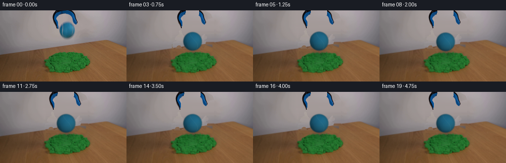
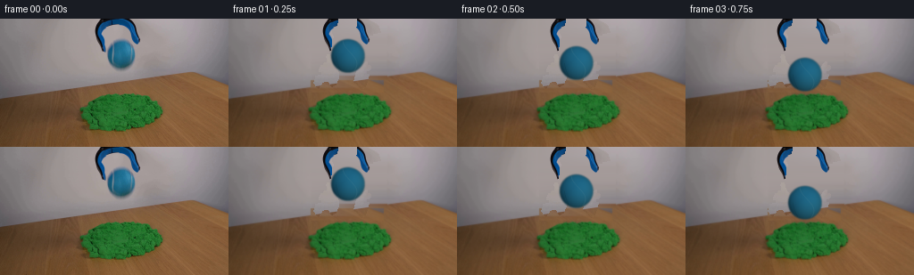
展开代码变化
--- 上一保存版本
+++ 本次保存版本
@@ -0,0 +1,390 @@
+from pathlib import Path
+
+import cv2
+import numpy as np
+
+from artifact_io import save
+
+
+CASE_DIR = Path(__file__).resolve().parent
+WIDTH, HEIGHT = 256, 144
+FRAME_COUNT = 20
+FPS = 4
+
+
+def smoothstep(x):
+ x = np.clip(x, 0.0, 1.0)
+ return x * x * (3.0 - 2.0 * x)
+
+
+def reconstruct_plate(image):
+ """Remove the suspended objects using the unobstructed wall and table edges."""
+ plate = image.astype(np.float32).copy()
+
+ for y in range(0, 69):
+ left = np.median(image[y, 82:92], axis=0)
+ right = np.median(image[y, 178:188], axis=0)
+ xs = np.arange(92, 178)
+ t = (xs - 92) / 85.0
+ plate[y, 92:178] = (
+ (1.0 - t)[:, None] * left[None, :]
+ + t[:, None] * right[None, :]
+ )
+
+ for y in range(69, 83):
+ texture = np.tile(image[y, 174:256], (2, 1))[:86]
+ left = np.median(image[y, 82:92], axis=0)
+ right = np.median(image[y, 178:188], axis=0)
+ xs = np.arange(92, 178)
+ t = (xs - 92) / 85.0
+ wall_blend = (
+ (1.0 - t)[:, None] * left[None, :]
+ + t[:, None] * right[None, :]
+ )
+ plate[y, 92:178] = 0.68 * texture + 0.32 * wall_blend
+
+ plate = cv2.GaussianBlur(plate, (3, 3), 0.55)
+ return np.clip(plate, 0, 255).astype(np.uint8)
+
+
+def extract_gripper_masks(image, plate):
+ yy, xx = np.ogrid[:HEIGHT, :WIDTH]
+ ball_region = (
+ ((xx - 134.0) ** 2) / (19.2**2)
+ + ((yy - 38.5) ** 2) / (19.2**2)
+ <= 1.0
+ )
+
+ left_poly = np.array(
+ [
+ [102, 0], [123, 0], [121, 17], [116, 23], [116, 39],
+ [123, 52], [124, 66], [121, 74], [116, 76], [112, 69],
+ [106, 71], [101, 78], [96, 72], [99, 62], [105, 51],
+ [109, 39], [108, 24], [103, 17],
+ ],
+ np.int32,
+ )
+ right_poly = np.array(
+ [
+ [143, 0], [164, 0], [170, 18], [168, 35], [163, 48],
+ [157, 57], [155, 67], [152, 76], [148, 79], [143, 74],
+ [139, 71], [141, 62], [145, 51], [147, 40], [147, 27],
+ [142, 18],
+ ],
+ np.int32,
+ )
+
+ difference = np.max(
+ np.abs(image.astype(np.int16) - plate.astype(np.int16)), axis=2
+ )
+ hsv = cv2.cvtColor(image, cv2.COLOR_RGB2HSV)
+ foreground = (
+ (difference > 7)
+ | (hsv[:, :, 1] > 45)
+ | (hsv[:, :, 2] < 125)
+ )
+
+ masks = []
+ for polygon in (left_poly, right_poly):
+ polygon_mask = np.zeros((HEIGHT, WIDTH), np.uint8)
+ cv2.fillPoly(polygon_mask, [polygon], 1)
+ mask = (
+ (polygon_mask > 0)
+ & ~ball_region
+ & foreground
+ ).astype(np.uint8)
+ mask = cv2.morphologyEx(
+ mask, cv2.MORPH_CLOSE, np.ones((3, 3), np.uint8)
+ )
+ count, labels, stats, _ = cv2.connectedComponentsWithStats(mask, 8)
+ kept = np.zeros_like(mask)
+ for component in range(1, count):
+ if stats[component, cv2.CC_STAT_AREA] >= 6:
+ kept[labels == component] = 1
+ masks.append(kept.astype(bool))
+
+ return masks[0], masks[1]
+
+
+def make_rgba_sprite(image, mask, x0, x1, y0, y1):
+ sprite = np.zeros((y1 - y0, x1 - x0, 4), np.uint8)
+ sprite[:, :, :3] = image[y0:y1, x0:x1]
+ sprite[:, :, 3] = mask[y0:y1, x0:x1].astype(np.uint8) * 255
+ return sprite
+
+
+def composite_sprite(destination, sprite, x, y):
+ """Alpha-composite an RGBA uint8 sprite at integer coordinates."""
+ sh, sw = sprite.shape[:2]
+ x0, y0 = max(0, x), max(0, y)
+ x1, y1 = min(WIDTH, x + sw), min(HEIGHT, y + sh)
+ if x0 >= x1 or y0 >= y1:
+ return destination
+
+ sx0, sy0 = x0 - x, y0 - y
+ sx1, sy1 = sx0 + (x1 - x0), sy0 + (y1 - y0)
+ source = sprite[sy0:sy1, sx0:sx1].astype(np.float32)
+ target = destination[y0:y1, x0:x1].astype(np.float32)
+ alpha = source[:, :, 3:4] / 255.0
+ destination[y0:y1, x0:x1] = np.clip(
+ source[:, :, :3] * alpha + target * (1.0 - alpha), 0, 255
+ ).astype(np.uint8)
+ return destination
+
+
+def make_ball_sprite(size=54, supersample=4):
+ """Analytic blue tennis ball with a restrained seam and studio lighting."""
+ radius = 18.8
+ center = size / 2.0 - 0.2
+ big_size = size * supersample
+ yy, xx = np.mgrid[:big_size, :big_size]
+ x = (xx + 0.5) / supersample - center
+ y = (yy + 0.5) / supersample - center
+ r2 = x * x + y * y
+ inside = r2 <= radius * radius
+
+ nx = np.clip(x / radius, -1.0, 1.0)
+ ny = np.clip(y / radius, -1.0, 1.0)
+ nz = np.sqrt(np.clip(1.0 - nx * nx - ny * ny, 0.0, 1.0))
+
+ # Light is high and slightly camera-right, matching the source ball.
+ light = np.array([0.20, -0.32, 0.93], np.float32)
+ light /= np.linalg.norm(light)
+ diffuse = np.clip(nx * light[0] + ny * light[1] + nz * light[2], 0, 1)
+ rim = np.clip((nx + ny) * 0.5 + 0.2, 0, 1)
+
+ base = np.array([30.0, 104.0, 137.0], np.float32)
+ color = (
+ base[None, None, :]
+ * (0.54 + 0.48 * diffuse[:, :, None])
+ + np.array([17.0, 29.0, 28.0], np.float32)[None, None, :]
+ * rim[:, :, None]
+ )
+
+ # Lower hemisphere falls into soft occlusion.
+ shade = np.clip((y + radius) / (2.0 * radius), 0.0, 1.0)
+ color *= (0.82 + 0.18 * (1.0 - shade))[:, :, None]
+
+ # Tennis seam: one broad pale curve crossing the visible face.
+ seam_x = 0.12 + 0.42 * np.sin((y / radius) * 2.25 + 0.5)
+ seam_dist = np.abs(x / radius - seam_x)
+ seam = np.clip(1.0 - seam_dist / 0.035, 0.0, 1.0)
+ seam *= (np.abs(y / radius) < 0.90) & (nz > 0.16)
+ seam_color = np.array([105.0, 145.0, 154.0], np.float32)
+ color = color * (1.0 - 0.22 * seam[:, :, None]) + (
+ seam_color[None, None, :] * 0.22 * seam[:, :, None]
+ )
+
+ # A second seam near the lower-left edge.
+ seam2_x = -0.48 - 0.22 * np.cos((y / radius) * 2.1)
+ seam2_dist = np.abs(x / radius - seam2_x)
+ seam2 = np.clip(1.0 - seam2_dist / 0.025, 0.0, 1.0)
+ seam2 *= (y > 0.0) & (y / radius < 0.88) & (nz > 0.18)
+ color = color * (1.0 - 0.14 * seam2[:, :, None])
+
+ # Fine fuzz modulation, deterministic and low contrast.
+ fuzz = (
+ np.sin(xx * 1.73 + yy * 0.91)
+ + np.sin(xx * 0.43 - yy * 1.37)
+ ) * 0.85
+ color += fuzz[:, :, None]
+ color = np.clip(color, 0, 255)
+
+ alpha = cv2.GaussianBlur(
+ inside.astype(np.float32), (0, 0), 0.8 * supersample
+ )
+ rgba_big = np.dstack([color, alpha * 255.0]).astype(np.uint8)
+ rgba = cv2.resize(
+ rgba_big, (size, size), interpolation=cv2.INTER_AREA
+ )
+ return rgba
+
+
+def sand_mask(image):
+ hsv = cv2.cvtColor(image, cv2.COLOR_RGB2HSV)
+ yy, xx = np.ogrid[:HEIGHT, :WIDTH]
+ mask = (
+ (hsv[:, :, 0] >= 35)
+ & (hsv[:, :, 0] <= 85)
+ & (hsv[:, :, 1] >= 65)
+ & (hsv[:, :, 2] >= 25)
+ & (yy >= 68)
+ & (xx >= 82)
+ & (xx <= 189)
+ )
+ mask = cv2.morphologyEx(
+ mask.astype(np.uint8), cv2.MORPH_CLOSE, np.ones((3, 3), np.uint8)
+ )
+ return mask.astype(bool)
+
+
+def deform_sand(frame, amount):
+ """Apply a local inverse warp: depressed center and a slightly raised rim."""
+ if amount <= 0.001:
+ return frame
+
+ yy, xx = np.mgrid[:HEIGHT, :WIDTH].astype(np.float32)
+ dx = xx - 135.0
+ dy = yy - 91.0
+ radius = np.sqrt((dx / 31.0) ** 2 + (dy / 20.0) ** 2)
+ weight = np.exp(-2.4 * radius**4) * (radius < 1.65)
+ rim = np.exp(-((radius - 0.88) / 0.28) ** 2)
+
+ depth = amount * weight
+ map_x = xx - amount * 0.18 * (dx / 31.0) * rim
+ map_y = yy - depth + amount * 0.25 * (dy / 20.0) * rim
+
+ warped = cv2.remap(
+ frame,
+ map_x,
+ map_y,
+ interpolation=cv2.INTER_CUBIC,
+ borderMode=cv2.BORDER_REFLECT_101,
+ )
+
+ mask = sand_mask(frame)
+ mask = cv2.GaussianBlur(mask.astype(np.float32), (0, 0), 1.1)
+ mask = np.clip(mask * (weight + 0.72 * rim), 0.0, 1.0)
+ frame[:] = (
+ warped.astype(np.float32) * mask[:, :, None]
+ + frame.astype(np.float32) * (1.0 - mask[:, :, None])
+ ).astype(np.uint8)
+
+ # Darkened impact pocket and a narrow, bright displaced rim.
+ pocket = np.exp(-((dx / 18.0) ** 2 + ((dy - 1.0) / 10.0) ** 2) ** 1.5)
+ pocket *= amount / 4.2
+ shaded = frame.astype(np.float32)
+ shaded[:, :, 1] *= 1.0 - 0.22 * pocket
+ shaded[:, :, 0] *= 1.0 - 0.12 * pocket
+ frame[:] = np.clip(shaded, 0, 255).astype(np.uint8)
+ return frame
+
+
+def add_contact_shadow(frame, center_x, center_y, strength, size_x, size_y):
+ if strength <= 0.001:
+ return frame
+ yy, xx = np.mgrid[:HEIGHT, :WIDTH].astype(np.float32)
+ shadow = np.exp(
+ -(((xx - center_x) / size_x) ** 2 + ((yy - center_y) / size_y) ** 2)
+ * 1.7
+ )
+ shadow *= strength
+ result = frame.astype(np.float32)
+ result[:, :, 0] *= 1.0 - 0.34 * shadow
+ result[:, :, 1] *= 1.0 - 0.27 * shadow
+ result[:, :, 2] *= 1.0 - 0.17 * shadow
+ frame[:] = np.clip(result, 0, 255).astype(np.uint8)
+ return frame
+
+
+def ball_motion(frame_index):
+ # The release is complete before contact. Values are center coordinates.
+ if frame_index == 0:
+ return 134.0, 38.5, 0.0, 1.0
+ if frame_index == 1:
+ return 134.0, 42.1, 0.0, 1.0
+ if frame_index == 2:
+ return 134.1, 50.1, 0.0, 1.0
+ if frame_index == 3:
+ return 134.2, 62.9, 0.0, 1.0
+ if frame_index == 4:
+ return 134.2, 64.4, 1.0, 0.91
+ if frame_index == 5:
+ return 134.2, 62.8, 0.0, 1.015
+ if frame_index == 6:
+ return 134.2, 64.0, 0.45, 0.975
+ if frame_index == 7:
+ return 134.2, 63.4, 0.20, 1.0
+ return 134.2, 63.7, 0.10, 1.0
+
+
+def gripper_shift(frame_index):
+ values = [0.0, 0.8, 2.2, 4.4, 6.2, 7.0, 7.2]
+ if frame_index < len(values):
+ return values[frame_index]
+ return values[-1]
+
+
+def render_frames(image):
+ plate = reconstruct_plate(image)
+ left_mask, right_mask = extract_gripper_masks(image, plate)
+ left_sprite = make_rgba_sprite(image, left_mask, 90, 126, 0, 82)
+ right_sprite = make_rgba_sprite(image, right_mask, 136, 172, 0, 82)
+ ball_sprite = make_ball_sprite()
+
+ frames = []
+ for index in range(FRAME_COUNT):
+ if index == 0:
+ frames.append(image.copy())
+ continue
+
+ frame = plate.copy()
+ shift = gripper_shift(index)
+ composite_sprite(frame, left_sprite, int(round(90 - shift)), 0)
+ composite_sprite(frame, right_sprite, int(round(136 + shift)), 0)
+
+ bx, by, compression, stretch = ball_motion(index)
+ deform = 0.0
+ if index == 3:
+ deform = 0.25
+ elif index == 4:
+ deform = 4.2
+ elif index == 5:
+ deform = 1.25
+ elif index == 6:
+ deform = 2.35
+ elif index >= 7:
+ deform = 1.15
+ deform_sand(frame, deform)
+
+ # Projected shadow becomes tighter and darker as the ball approaches.
+ approach = float(np.clip((by - 38.5) / 25.5, 0.0, 1.0))
+ add_contact_shadow(
+ frame,
+ bx + 2.0,
+ 86.5,
+ 0.10 + 0.30 * approach,
+ 22.0 - 4.0 * approach,
+ 7.5 - 2.0 * approach,
+ )
+
+ # Supersampled sprite is downsampled once more for the compressed pose.
+ sw = max(32, int(round(ball_sprite.shape[1] * (1.0 + 0.07 * compression))))
+ sh = max(32, int(round(ball_sprite.shape[0] * stretch)))
+ posed = cv2.resize(
+ ball_sprite,
+ (sw, sh),
+ interpolation=cv2.INTER_LANCZOS4,
+ )
+ composite_sprite(
+ frame,
+ posed,
+ int(round(bx - sw / 2.0)),
+ int(round(by - sh / 2.0)),
+ )
+
+ # After impact, a faint grain shadow touches the lower ball edge.
+ if index >= 4:
+ add_contact_shadow(
+ frame, bx + 1.0, by + 16.5, 0.30, 14.0, 3.8
+ )
+ frames.append(frame)
+
+ return np.stack(frames)
+
+
+def main():
+ image = cv2.cvtColor(
+ cv2.imread(str(CASE_DIR / "first_frame.png"), cv2.IMREAD_COLOR),
+ cv2.COLOR_BGR2RGB,
+ )
+ if image.shape != (HEIGHT, WIDTH, 3):
+ raise ValueError(f"Unexpected first frame shape: {image.shape}")
+ frames = render_frames(image)
+ if not np.array_equal(frames[0], image):
+ raise AssertionError("Frame 0 must remain pixel-identical")
+ save(frames, CASE_DIR)
+
+
+if __name__ == "__main__":
+ main()
候选 02播放与检查图
点击播放 · 原生 RGB 像素

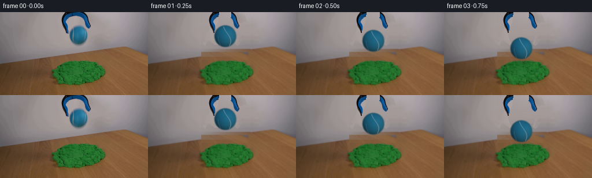
展开代码变化
--- 上一保存版本
+++ 本次保存版本
@@ -57,19 +57,18 @@
left_poly = np.array(
[
- [102, 0], [123, 0], [121, 17], [116, 23], [116, 39],
- [123, 52], [124, 66], [121, 74], [116, 76], [112, 69],
- [106, 71], [101, 78], [96, 72], [99, 62], [105, 51],
- [109, 39], [108, 24], [103, 17],
+ [102, 0], [123, 0], [121, 18], [117, 26], [118, 42],
+ [123, 50], [122, 56], [116, 56], [110, 51], [105, 48],
+ [101, 52], [100, 58], [96, 59], [96, 49], [103, 37],
+ [108, 27], [108, 20], [103, 15],
],
np.int32,
)
right_poly = np.array(
[
- [143, 0], [164, 0], [170, 18], [168, 35], [163, 48],
- [157, 57], [155, 67], [152, 76], [148, 79], [143, 74],
- [139, 71], [141, 62], [145, 51], [147, 40], [147, 27],
- [142, 18],
+ [143, 0], [164, 0], [170, 18], [168, 33], [160, 48],
+ [157, 55], [153, 58], [150, 55], [151, 48], [147, 40],
+ [147, 28], [142, 18],
],
np.int32,
)
@@ -78,11 +77,7 @@
np.abs(image.astype(np.int16) - plate.astype(np.int16)), axis=2
)
hsv = cv2.cvtColor(image, cv2.COLOR_RGB2HSV)
- foreground = (
- (difference > 7)
- | (hsv[:, :, 1] > 45)
- | (hsv[:, :, 2] < 125)
- )
+ foreground = (difference > 5) | (hsv[:, :, 1] > 17)
masks = []
for polygon in (left_poly, right_poly):
@@ -99,7 +94,7 @@
count, labels, stats, _ = cv2.connectedComponentsWithStats(mask, 8)
kept = np.zeros_like(mask)
for component in range(1, count):
- if stats[component, cv2.CC_STAT_AREA] >= 6:
+ if stats[component, cv2.CC_STAT_AREA] >= 4:
kept[labels == component] = 1
masks.append(kept.astype(bool))
@@ -165,22 +160,26 @@
shade = np.clip((y + radius) / (2.0 * radius), 0.0, 1.0)
color *= (0.82 + 0.18 * (1.0 - shade))[:, :, None]
- # Tennis seam: one broad pale curve crossing the visible face.
- seam_x = 0.12 + 0.42 * np.sin((y / radius) * 2.25 + 0.5)
+ # Tennis seam: a soft, almost white curve crossing the visible face.
+ seam_x = 0.16 + 0.34 * np.sin((y / radius) * 2.1 + 0.6)
seam_dist = np.abs(x / radius - seam_x)
- seam = np.clip(1.0 - seam_dist / 0.035, 0.0, 1.0)
+ seam = np.clip(1.0 - seam_dist / 0.055, 0.0, 1.0)
seam *= (np.abs(y / radius) < 0.90) & (nz > 0.16)
- seam_color = np.array([105.0, 145.0, 154.0], np.float32)
- color = color * (1.0 - 0.22 * seam[:, :, None]) + (
- seam_color[None, None, :] * 0.22 * seam[:, :, None]
+ seam_color = np.array([178.0, 182.0, 181.0], np.float32)
+ color = color * (1.0 - 0.62 * seam[:, :, None]) + (
+ seam_color[None, None, :] * 0.62 * seam[:, :, None]
)
# A second seam near the lower-left edge.
- seam2_x = -0.48 - 0.22 * np.cos((y / radius) * 2.1)
+ seam2_x = -0.48 - 0.19 * np.cos((y / radius) * 2.1)
seam2_dist = np.abs(x / radius - seam2_x)
- seam2 = np.clip(1.0 - seam2_dist / 0.025, 0.0, 1.0)
+ seam2 = np.clip(1.0 - seam2_dist / 0.045, 0.0, 1.0)
seam2 *= (y > 0.0) & (y / radius < 0.88) & (nz > 0.18)
- color = color * (1.0 - 0.14 * seam2[:, :, None])
+ color = color * (1.0 - 0.27 * seam2[:, :, None]) + (
+ np.array([155.0, 163.0, 165.0], np.float32)[None, None, :]
+ * 0.27
+ * seam2[:, :, None]
+ )
# Fine fuzz modulation, deterministic and low contrast.
fuzz = (
@@ -197,6 +196,7 @@
rgba = cv2.resize(
rgba_big, (size, size), interpolation=cv2.INTER_AREA
)
+ rgba[:, :, :3] = cv2.GaussianBlur(rgba[:, :, :3], (3, 3), 0.45)
return rgba
@@ -242,8 +242,9 @@
borderMode=cv2.BORDER_REFLECT_101,
)
- mask = sand_mask(frame)
- mask = cv2.GaussianBlur(mask.astype(np.float32), (0, 0), 1.1)
+ mask = sand_mask(frame).astype(np.float32)
+ mask = cv2.erode(mask, np.ones((5, 5), np.uint8))
+ mask = cv2.GaussianBlur(mask, (0, 0), 2.2)
mask = np.clip(mask * (weight + 0.72 * rim), 0.0, 1.0)
frame[:] = (
warped.astype(np.float32) * mask[:, :, None]
@@ -251,7 +252,7 @@
).astype(np.uint8)
# Darkened impact pocket and a narrow, bright displaced rim.
- pocket = np.exp(-((dx / 18.0) ** 2 + ((dy - 1.0) / 10.0) ** 2) ** 1.5)
+ pocket = np.exp(-((dx / 16.0) ** 2 + ((dy - 1.0) / 9.0) ** 2) ** 1.5)
pocket *= amount / 4.2
shaded = frame.astype(np.float32)
shaded[:, :, 1] *= 1.0 - 0.22 * pocket
可观测工具轨迹
实际执行的命令与返回图片。
命令 1exit 0
/bin/bash -c "pwd && rg --files -g 'prompt.txt' -g 'GENERATION_RULES.md' -g '"'!*.mp4'"' -g '"'!*.png'"'"
命令 2exit 0
/bin/bash -c "ls -la && find . -maxdepth 2 -type f -printf '%p %s bytes\\n' | sort"
命令 3exit 0
/bin/bash -c 'cat GENERATION_RULES.md'
命令 4exit 0
/bin/bash -c 'cat prompt.txt'
命令 5exit 0
/bin/bash -c "sed -n '1,240p' artifact_io.py"
命令 6exit 0
/bin/bash -c "sed -n '1,240p' player_template.html"
命令 7exit 0
/bin/bash -c "python - <<'PY' import importlib.util for name in ['cv2','numpy','PIL','scipy','skimage']: print(name, bool(importlib.util.find_spec(name))) PY"
命令 8exit 0
/bin/bash -c "python - <<'PY'
from PIL import Image
im=Image.open('first_frame.png')
im.crop((80,0,180,90)).resize((600,540)).save('.tmp/top_zoom.png')
im.crop((70,65,200,140)).resize((780,450)).save('.tmp/sand_zoom.png')
PY"命令 9exit 0
/bin/bash -c "python - <<'PY'
import cv2, numpy as np
im=cv2.imread('first_frame.png')[:,:,::-1]
hsv=cv2.cvtColor(im, cv2.COLOR_RGB2HSV)
# sample ROI central
for y,x in [(52,132),(50,120),(52,145),(20,112),(30,115),(45,120),(50,150),(78,132),(90,132),(20,132),(70,132),(5,132)]:
print((x,y),'rgb',im[y,x],'hsv',hsv[y,x])
# blue pixel range in top
roi=im[:90,90:175]
r=roi.reshape(-1,3)
print('blue-like', ((r[:,2]>r[:,0]+15)&(r[:,2]>r[:,1]-5)&(r[:,2]>60)).sum())
PY"命令 10exit 0
/bin/bash -c "python - <<'PY'
import cv2, numpy as np
im=cv2.imread('first_frame.png')
rgb=im[:,:,::-1]
hsv=cv2.cvtColor(im,cv2.COLOR_BGR2HSV)
# ball mask in ROI circle
Y,X=np.ogrid[:144,:256]
mask=((X-132)**2+(Y-51)**2<22**2)&(hsv[:,:,0]>85)&(hsv[:,:,0]<115)&(hsv[:,:,1]>80)&(hsv[:,:,2]>45)
ys,xs=np.where(mask)
print('ball pix',len(xs),'bounds',xs.min(),xs.max(),ys.min(),ys.max())
# sand green mask
sm=(hsv[:,:,0]>38)&(hsv[:,:,0]<85)&(hsv[:,:,1]>80)&(hsv[:,:,2]>35)
sm[:65]=False
n,lab,stats,cent=cv2.connectedComponentsWithStats(sm.astype(np.uint8),8)
for i in np.argsort(stats[1:,4])[::-1][:5]+1:
print(i,stats[i].tolist(),cent[i])
# gripper dark/blue mask
gm=((hsv[:,:,2]<65)|((hsv[:,:,0]>85)&(hsv[:,:,0]<120)&(hsv[:,:,1]>90)))&(Y<60)&(X>90)&(X<180)
gm &= ~mask
print('grip pix',gm.sum())
cv2.imwrite('.tmp/masks.png', np.dstack([mask*255,sm*255,gm*255]))
PY"命令 11exit 0
/bin/bash -c "python - <<'PY'
import cv2,numpy as np
im=cv2.imread('first_frame.png')
# print patches enlarged with grid? save
cv2.imwrite('.tmp/grip_crop.png',cv2.resize(im[0:80,80:185],(840,640),interpolation=cv2.INTER_NEAREST))
PY"命令 12exit 0
/bin/bash -c "python - <<'PY'
import cv2,numpy as np
im=cv2.imread('first_frame.png'); rgb=im[:,:,::-1]; hsv=cv2.cvtColor(im,cv2.COLOR_BGR2HSV)
Y,X=np.ogrid[:144,:256]
# region top only
sat=hsv[:,:,1]; val=hsv[:,:,2]
m=((val<130)|((hsv[:,:,0]>85)&(hsv[:,:,0]<125)&(sat>55)))&(Y<78)&(X>85)&(X<180)
# remove blue ball sphere
m &= ((X-132)**2+(Y-52)**2 > 23**2)
m=(m.astype(np.uint8)*255)
# morph
m=cv2.morphologyEx(m,cv2.MORPH_CLOSE,np.ones((3,3),np.uint8))
cv2.imwrite('.tmp/grip_mask.png',m)
# overlay
out=rgb.copy(); out[m>0]=out[m>0]*.3+np.array([255,0,0])*.7
cv2.imwrite('.tmp/grip_overlay.png',out[:,:,::-1])
PY"命令 13exit 0
/bin/bash -c "python - <<'PY'
import cv2,numpy as np
im=cv2.imread('first_frame.png'); hsv=cv2.cvtColor(im,cv2.COLOR_BGR2HSV)
Y,X=np.ogrid[:144,:256]
m=((hsv[:,:,2]<130)|((hsv[:,:,0]>85)&(hsv[:,:,0]<125)&(hsv[:,:,1]>55)))&(Y<78)&(X>85)&(X<180)
m &= ((X-132)**2+(Y-52)**2 > 23**2)
# exclude uncertain low region y 68-78 except gripper x 115-150
m &= ~((Y>66)&~((X>115)&(X<150)))
n,lab,stats,cent=cv2.connectedComponentsWithStats(m.astype(np.uint8),8)
print(stats)
# keep components area>3
keep=np.zeros_like(m)
for i in range(1,n):
if stats[i,4]>4: keep |= lab==i
cv2.imwrite('.tmp/grip_mask2.png',keep.astype(np.uint8)*255)
PY"命令 14exit 0
/bin/bash -c "python - <<'PY'
import cv2,numpy as np
im=cv2.imread('first_frame.png'); rgb=im[:,:,::-1]
for y in range(58,82):
xs=[]
for x in range(95,175):
r,g,b=rgb[y,x]
if (r<120 and g<130 and b<135) or (b>g+20 and b>r+20 and b>75): xs.append(x)
# runs
runs=[]
if xs:
s=p=xs[0]
for x in xs[1:]:
if x>p+1:runs.append((s,p));s=x
p=x
runs.append((s,p))
print(y,runs)
PY"命令 15exit 0
/bin/bash -c "python - <<'PY'
import cv2,numpy as np
im=cv2.imread('first_frame.png'); rgb=im[:,:,::-1]
for y in range(22,58):
xs=[]
for x in range(100,165):
r,g,b=map(int,rgb[y,x]);
if b>g+12 and b>r+15 and b>60: xs.append(x)
runs=[]
if xs:
s=p=xs[0]
for x in xs[1:]:
if x>p+1:runs.append((s,p));s=x
p=x
runs.append((s,p))
print(y,runs)
PY"命令 16exit 0
/bin/bash -c "python - <<'PY'
import cv2,numpy as np
im=cv2.imread('first_frame.png'); rgb=im[:,:,::-1]; hsv=cv2.cvtColor(im,cv2.COLOR_BGR2HSV)
Y,X=np.ogrid[:144,:256]
# green mask stats rows
sm=(hsv[:,:,0]>35)&(hsv[:,:,0]<85)&(hsv[:,:,1]>70)&(hsv[:,:,2]>25)&(Y>65)
for y in range(70,133,3):
xs=np.where(sm[y])[0]
if len(xs): print(y,xs.min(),xs.max(),len(xs))
# bounds
ys,xs=np.where(sm)
print('sand bounds',xs.min(),xs.max(),ys.min(),ys.max())
# ball estimated center and edge details
PY"命令 17exit 0
/bin/bash -c "python - <<'PY'
import cv2,numpy as np
im=cv2.imread('first_frame.png'); hsv=cv2.cvtColor(im,cv2.COLOR_BGR2HSV)
Y,X=np.ogrid[:144,:256]
# print mean color in ring around ball, grid sample
for y in [28,30,32,34,36,38,40,42,44,46,48,50,52,54,56,58,60,62,64,66,68,70]:
print(y, [tuple(int(v) for v in im[y,x][::-1]) for x in [112,116,120,124,128,132,136,140,144,148,152,156]])
PY"命令 18exit 0
/bin/bash -c "python - <<'PY'
import cv2,numpy as np
im=cv2.imread('first_frame.png')
cv2.imwrite('.tmp/ball_crop.png',cv2.resize(im[20:75,105:160],(660,660),interpolation=cv2.INTER_NEAREST))
cv2.imwrite('.tmp/sand_crop.png',cv2.resize(im[72:134,78:192],(912,496),interpolation=cv2.INTER_NEAREST))
PY"命令 19exit 0
/bin/bash -c "python - <<'PY'
import cv2,numpy as np
im=cv2.imread('first_frame.png'); rgb=im[:,:,::-1]; hsv=cv2.cvtColor(im,cv2.COLOR_BGR2HSV)
Y,X=np.ogrid[:144,:256]
# grip color broad: dark or blue
g=(((hsv[:,:,0]>=88)&(hsv[:,:,0]<=125)&(hsv[:,:,1]>70)&(hsv[:,:,2]>35))|(hsv[:,:,2]<105))
left=g&(X>=102)&(X<=123)&(Y>=18)&(Y<=79)
right=g&(X>=143)&(X<=168)&(Y>=18)&(Y<=79)
# remove likely ball area not needed here
for name,m in [('left',left),('right',right)]:
out=np.zeros((144,256,3),np.uint8); out[m]=rgb[m]
cv2.imwrite('.tmp/'+name+'_sprite.png',out[:,:,::-1])
print(name,m.sum())
# overlay masks colored
ov=rgb.copy();ov[left]=[255,0,0];ov[right]=[255,0,255]
cv2.imwrite('.tmp/fingers_mask.png',ov[:,:,::-1])
PY"命令 20exit 0
/bin/bash -c "python - <<'PY'
import cv2,numpy as np
im=cv2.imread('first_frame.png'); rgb=im[:,:,::-1].astype(float); hsv=cv2.cvtColor(im,cv2.COLOR_BGR2HSV)
Y,X=np.ogrid[:144,:256]
# background approx: use left/right vertical row around same y; create inpaint candidate with masks of all top objects
mask=((X>102)&(X<168)&(Y<78)).astype(np.uint8)*255
# exclude obvious ball by still all
bg=cv2.inpaint(im,mask,3,cv2.INPAINT_TELEA)
cv2.imwrite('.tmp/bg_inpaint.png',bg)
PY"命令 21exit 0
/bin/bash -c "python - <<'PY'
from PIL import Image,ImageDraw,ImageFont
im=Image.open('first_frame.png').resize((1024,576),Image.Resampling.NEAREST)
d=ImageDraw.Draw(im)
for x in range(0,257,10):
X=x*4
d.line((X,0,X,576),fill=(255,0,0) if x%50==0 else (120,40,40),width=1)
if x%20==0:d.text((X+2,2),str(x),fill=(255,255,0))
for y in range(0,145,10):
Y=y*4
d.line((0,Y,1024,Y),fill=(255,0,0) if y%50==0 else (120,40,40),width=1)
if y%20==0:d.text((2,Y+2),str(y),fill=(255,255,0))
im.save('.tmp/grid.png')
PY"命令 22exit 0
/bin/bash -c "python - <<'PY'
import cv2,numpy as np
im=cv2.imread('first_frame.png'); rgb=im[:,:,::-1]; hsv=cv2.cvtColor(im,cv2.COLOR_BGR2HSV)
Y,X=np.ogrid[:144,:256]
# rough ball circle
bm=((X-133.5)**2+(Y-42.5)**2<22.5**2)
# gr mask as broad then keep only pixels excluding ball
g=(((hsv[:,:,0]>=88)&(hsv[:,:,0]<=125)&(hsv[:,:,1]>55)&(hsv[:,:,2]>25))|(hsv[:,:,2]<95))&(Y<80)&(X>98)&(X<170)&~bm
# image display
out=rgb.copy();out[g]=[255,0,0]
cv2.imwrite('.tmp/gr_overlay2.png',out[:,:,::-1])
print(g.sum())
PY"命令 23exit 0
/bin/bash -c "python - <<'PY'
import cv2,numpy as np
im=cv2.imread('first_frame.png'); hsv=cv2.cvtColor(im,cv2.COLOR_BGR2HSV)
Y,X=np.ogrid[:144,:256]
# ball: circle plus color criteria
bm=((X-133.5)**2+(Y-42.5)**2<23.5**2)&(hsv[:,:,0]>87)&(hsv[:,:,0]<117)&(hsv[:,:,1]>35)&(hsv[:,:,2]>20)
# exact contour-ish from threshold
bm = ((X-133.5)**2+(Y-42.5)**2<22.2**2) & (hsv[:,:,1]>25)
# but bottom rows may be shadowish
cv2.imwrite('.tmp/ball_mask.png',bm.astype(np.uint8)*255)
# left/right gripper polygon-ish by saturation/dark + not ball
base=(((hsv[:,:,0]>=85)&(hsv[:,:,0]<=128)&(hsv[:,:,1]>50)&(hsv[:,:,2]>20))|(hsv[:,:,2]<115))
base&=~bm
# finger left includes x 103:124 y 21:77, right x 143:167 y 18:76. Use contours.
for name,(x0,x1) in [('left',(100,125)),('right',(142,170))]:
m=base.copy();m[:18]=False;m[80:]=False;m[:,:x0]=False;m[:,x1:]=False
# remove stray bottom x region
if name=='left': m[72:, :107]=False;m[72:,124:]=False
n,lab,stats,cent=cv2.connectedComponentsWithStats(m.astype(np.uint8),8)
out=np.zeros_like(m)
for i in range(1,n):
if stats[i,4]>=3: out |= lab==i
cv2.imwrite('.tmp/'+name+'_m.png',out.astype(np.uint8)*255)
print(name,out.sum(),cv2.boundingRect(out.astype(np.uint8)))
PY"命令 24exit 0
/bin/bash -c "python - <<'PY'
from PIL import Image,ImageDraw
im=Image.open('first_frame.png').crop((90,0,180,85)).resize((900,850),Image.Resampling.NEAREST)
d=ImageDraw.Draw(im)
for x in range(90,181,5):
X=(x-90)*10; d.line((X,0,X,850),fill=(255,0,0) if x%10==0 else (120,50,50),width=1)
if x%10==0:d.text((X+2,2),str(x),fill=(255,255,0))
for y in range(0,86,5):
Y=y*10; d.line((0,Y,900,Y),fill=(255,0,0) if y%10==0 else (120,50,50),width=1)
if y%10==0:d.text((2,Y+2),str(y),fill=(255,255,0))
im.save('.tmp/grip_grid.png')
PY"命令 25exit 0
/bin/bash -c "python - <<'PY'
import cv2,numpy as np
im=cv2.imread('first_frame.png'); rgb=im[:,:,::-1]; hsv=cv2.cvtColor(im,cv2.COLOR_BGR2HSV)
Y,X=np.ogrid[:144,:256]
# ball circle mask
bm=((X-133.5)**2+(Y-42.7)**2<22.2**2)&(hsv[:,:,1]>18)
# build finger masks via hand-picked broad polygons then color threshold, excluding ball
polys={'left':np.array([[103,18],[115,17],[116,24],[116,44],[121,54],[123,60],[120,70],[116,74],[111,69],[105,71],[101,76],[97,72],[101,64],[105,54],[108,39],[108,26]],np.int32),
'right':np.array([[147,18],[155,17],[164,24],[164,34],[161,44],[157,51],[154,60],[152,68],[149,75],[144,71],[139,70],[142,61],[145,50],[147,39]],np.int32)}
for name,poly in polys.items():
pm=np.zeros((144,256),np.uint8);cv2.fillPoly(pm,[poly],1)
m=(pm>0)&~bm
# include all actual pixels in polygon (avoid excluding gray highlights)
cv2.imwrite('.tmp/'+name+'_poly.png',m.astype(np.uint8)*255)
print(name,m.sum())
PY"命令 26exit 0
/bin/bash -c "python - <<'PY'
import cv2,numpy as np
im=cv2.imread('first_frame.png'); rgb=im[:,:,::-1]
mask=cv2.imread('.tmp/left_poly.png',0)
out=rgb.copy();out[mask>0]=[255,0,0]
cv2.imwrite('.tmp/poly_overlay.png',out[:,:,::-1])
PY"命令 27exit 0
/bin/bash -c "python - <<'PY'
import cv2,numpy as np
im=cv2.imread('first_frame.png')
Y,X=np.ogrid[:144,:256]
m=((X-133.5)**2+(Y-42.5)**2<21.8**2)
out=np.zeros_like(im);out[m]=im[m]
cv2.imwrite('.tmp/ball_sprite_raw.png',cv2.resize(out[18:68,110:158],(480,500),interpolation=cv2.INTER_NEAREST))
PY"命令 28exit 0
/bin/bash -c "python - <<'PY'
import cv2,numpy as np
im=cv2.imread('first_frame.png')
# rows 50 onward print edge: find pixels close to ball blue
for y in range(38,61):
xs=[]
for x in range(108,160):
b,g,r=map(int,im[y,x]);
if b>r+10 and b>g+5:xs.append(x)
print(y,(min(xs),max(xs)) if xs else None)
PY"命令 29exit 0
/bin/bash -c "python - <<'PY'
import cv2,numpy as np
im=cv2.imread('first_frame.png')
for y in range(20,58,2):
xs=[]
for x in range(105,165):
b,g,r=map(int,im[y,x]);
if b>r+10 and b>g+5:xs.append(x)
print(y,(min(xs),max(xs)) if xs else None)
PY"命令 30exit 0
/bin/bash -c "python - <<'PY'
import cv2,numpy as np
im=cv2.imread('first_frame.png');hsv=cv2.cvtColor(im,cv2.COLOR_BGR2HSV)
Y,X=np.ogrid[:144,:256]
# create visual overlays of candidate ball mask strict blue
for name,m in [
('blue',((hsv[:,:,0]>90)&(hsv[:,:,0]<120)&(hsv[:,:,1]>80)&(hsv[:,:,2]>20)&((X-133.5)**2+(Y-42.5)**2<24**2))),
('sat',((hsv[:,:,1]>20)&((X-133.5)**2+(Y-42.5)**2<22.4**2))),
('strict',((hsv[:,:,0]>85)&(hsv[:,:,0]<120)&(hsv[:,:,1]>40)&(hsv[:,:,2]>15)&((X-133.5)**2+(Y-42.5)**2<23**2)))]:
out=im.copy();out[m]=[0,0,255];cv2.imwrite('.tmp/bm_'+name+'.png',out)
print(name,m.sum())
PY"命令 31exit 0
/bin/bash -c "python - <<'PY'
import cv2,numpy as np
im=cv2.imread('first_frame.png'); rgb=im[:,:,::-1]; hsv=cv2.cvtColor(im,cv2.COLOR_BGR2HSV)
Y,X=np.ogrid[:144,:256]
# finger color: blue/dark or gray blue; masks from components by connectivity seeds
seed=np.zeros((144,256),np.uint8)
# candidate colors
cand=(((hsv[:,:,0]>85)&(hsv[:,:,0]<135)&(hsv[:,:,1]>35)&(hsv[:,:,2]>15))|(hsv[:,:,2]<130))
# remove ball + green + wood
cand &= ((X-133.5)**2+(Y-42.5)**2>24**2)
cand &= ~((hsv[:,:,0]>35)&(hsv[:,:,0]<85)&(hsv[:,:,1]>60))
# manually seeds: left at (113,25), right (152,25), lower fingers etc
# crop components
cand[:15]=False;cand[82:]=False;cand[:,:95]=False;cand[:,172:]=False
n,lab,stats,cent=cv2.connectedComponentsWithStats(cand.astype(np.uint8),8)
for i in range(1,n):
if stats[i,4]>4: print(i,stats[i].tolist(),cent[i])
PY"命令 32exit 0
/bin/bash -c "python - <<'PY'
import cv2
im=cv2.imread('first_frame.png')
g=cv2.cvtColor(im,cv2.COLOR_BGR2GRAY)
for p2 in [10,15,20,25]:
c=cv2.HoughCircles(g,cv2.HOUGH_GRADIENT,dp=1,minDist=20,param1=60,param2=p2,minRadius=10,maxRadius=25)
print(p2,c)
PY"命令 33exit 0
/bin/bash -c "python - <<'PY'
import cv2,numpy as np
im=cv2.imread('first_frame.png'); hsv=cv2.cvtColor(im,cv2.COLOR_BGR2HSV)
Y,X=np.ogrid[:144,:256]
# ball bottom line at y 56, circle 21.5 radius center 34? sphere top 20, bottom 57 -> center 38.5? Actually mask x range
# Find radial center by horizontal boundaries y 20..56
rows={}
for y in range(20,58):
xs=[]
for x in range(105,165):
b,g,r=map(int,im[y,x]);
if b>r+12 and b>g+5: xs.append(x)
rows[y]=(min(xs),max(xs)) if xs else None
print(rows)
# select top center from ellipse equation boundaries
PY"命令 34exit 0
/bin/bash -c "python - <<'PY'
import cv2,numpy as np
im=cv2.imread('first_frame.png')
# center x 133.5; blue ball bounds rows 20..56, radius 18.5, center y 38.5, but left starts 110 at top due occlusion? inspect crop with 2x grid only
crop=im[15:62,105:163]
cv2.imwrite('.tmp/ball_crop2.png',cv2.resize(crop,(580,470),interpolation=cv2.INTER_NEAREST))
PY"命令 35exit 0
/bin/bash -c "python - <<'PY'
import cv2,numpy as np
im=cv2.imread('first_frame.png'); hsv=cv2.cvtColor(im,cv2.COLOR_BGR2HSV)
Y,X=np.ogrid[:144,:256]
# Try circular ball mask center (134,38.5), radius 18.5, and remove gripper where likely: compare pixels
bm=((X-134)**2+(Y-38.5)**2<18.7**2)
# print counts by row
for y in range(18,60):
xs=np.where(bm[y])[0]
if len(xs):print(y,xs.min(),xs.max(),len(xs))
cv2.imwrite('.tmp/bm_circ.png',bm.astype(np.uint8)*255)
PY"命令 36exit 0
/bin/bash -c "python - <<'PY'
import cv2,numpy as np
im=cv2.imread('first_frame.png'); hsv=cv2.cvtColor(im,cv2.COLOR_BGR2HSV)
Y,X=np.ogrid[:144,:256]
bm=((X-134)**2+(Y-38.5)**2<18.7**2)
# evaluate pixel hue/color for circle
for y in [22,26,30,34,38,42,46,50,54]:
print('y',y)
for x in [116,118,120,122,124,126,128,130,132,134,136,138,140,142,144,146,148,150,152]:
if bm[y,x]: print(x,tuple(int(v) for v in im[y,x][::-1]),end='; ')
print()
PY"命令 37exit 0
/bin/bash -c "python - <<'PY'
import cv2,numpy as np
im=cv2.imread('first_frame.png'); hsv=cv2.cvtColor(im,cv2.COLOR_BGR2HSV)
Y,X=np.ogrid[:144,:256]
# gripper mask simply polygon visible object + exclude ball; inpaint background
pm=np.zeros((144,256),np.uint8)
poly=np.array([[104,0],[163,0],[169,17],[166,34],[164,48],[157,55],[155,67],[153,74],[149,78],[143,74],[139,72],[140,64],[143,54],[145,45],[146,35],[145,22],[138,17],[128,17],[121,18],[117,23],[118,37],[123,48],[124,57],[124,68],[120,73],[115,74],[111,69],[105,70],[101,77],[97,71],[100,62],[106,51],[110,39],[110,24],[104,16]],np.int32)
cv2.fillPoly(pm,[poly],255)
# also ball ellipse polygon fill
bm=((X-134)**2/(18.7**2)+(Y-38.5)**2/(18.7**2)<1)
pm[bm]=255
# inpaint
bg=cv2.inpaint(im,pm,3,cv2.INPAINT_TELEA)
cv2.imwrite('.tmp/bg_objmask.png',bg)
PY"命令 38exit 0
/bin/bash -c "python - <<'PY'
import cv2, numpy as np
im=cv2.imread('first_frame.png')[:,:,::-1]
clean=im.copy()
# horizontal interpolated reconstruction of the suspended-object strip
for y in range(0,83):
l=np.median(im[y,84:94],axis=0)
r=np.median(im[y,176:186],axis=0)
xs=np.arange(94,177)
t=(xs-94)/(176-94)
vals=(1-t)[:,None]*l[None,:]+t[:,None]*r[None,:]
clean[y,94:177]=np.clip(vals,0,255).astype(np.uint8)
# soften replacement edges
clean=cv2.GaussianBlur(clean,(3,3),0.7)
cv2.imwrite('.tmp/clean_plate.png',clean[:,:,::-1])
PY"命令 39exit 0
/bin/bash -c "python - <<'PY'
import cv2,numpy as np
im=cv2.imread('first_frame.png'); hsv=cv2.cvtColor(im,cv2.COLOR_BGR2HSV)
Y,X=np.ogrid[:144,:256]
# Need precise object masks. inspect with saturation threshold crop and coordinates
# save threshold overlay for all top object via low-saturation mismatch?
# approximate masks using color and hand polygons, then keep original pixels within; erode little.
ball=((X-134.0)**2/(18.6**2)+(Y-38.6)**2/(18.6**2)<=1.0)
# gripper include everything inside tight object silhouette, use hand shape approximated
pm=np.zeros((144,256),np.uint8)
poly=np.array([[105,0],[163,0],[169,18],[167,35],[162,48],[158,57],[157,65],[154,73],[150,78],[145,73],[139,69],[141,61],[144,52],[146,43],[147,33],[146,23],[140,17],[130,17],[121,18],[117,23],[118,37],[123,48],[124,57],[124,67],[120,73],[116,72],[112,67],[106,69],[102,76],[98,71],[100,63],[106,52],[109,40],[110,24],[105,16]],np.int32)
cv2.fillPoly(pm,[poly],1)
grip=(pm>0)&~ball
# ensure all actual gripper pixels only inside polygon; keep original
# create sprites RGBA with feather mask: interior exact; anti-aliased alpha edge based on geometry only
# save debug overlay
ov=im.copy(); ov[ball]=[0,0,255]; ov[grip]=[255,0,0]
cv2.imwrite('.tmp/object_masks.png',ov)
np.savez('.tmp/masks.npz',ball=ball,grip=grip)
PY"命令 40exit 0
/bin/bash -c "python - <<'PY'
import cv2,numpy as np
im=cv2.imread('first_frame.png'); rgb=im[:,:,::-1]
# object crop 90:180, 0:82 upscale with grid 1 px impossible; maybe nearest 12x
crop=im[0:82,90:180]
cv2.imwrite('.tmp/object_crop.png',cv2.resize(crop,(1080,984),interpolation=cv2.INTER_NEAREST))
PY"命令 41exit 0
/bin/bash -c "python - <<'PY'
import cv2,numpy as np
im=cv2.imread('first_frame.png')[:,:,::-1].astype(np.float32)
clean=cv2.imread('.tmp/clean_plate.png')[:,:,::-1].astype(np.float32)
hsv=cv2.cvtColor(im.astype(np.uint8),cv2.COLOR_RGB2HSV)
Y,X=np.ogrid[:144,:256]
roi=(X>90)&(X<180)&(Y<82)
ball=((X-135.0)**2/(15.8**2)+(Y-38.5)**2/(18.2**2)<1)
diff=np.max(np.abs(im-clean),axis=2)
cand=roi&~ball&((diff>10)|(hsv[:,:,1]>55)|(hsv[:,:,2]<95))
# only top object region
cand &= ((X<125)|(X>142))
cand &= ~((Y>73)&~(((X>95)&(X<123))|((X>140)&(X<170))))
# morphology close and keep comps
cand8=(cand.astype(np.uint8)*255)
cand8=cv2.morphologyEx(cand8,cv2.MORPH_CLOSE,np.ones((3,3),np.uint8))
n,lab,stats,cent=cv2.connectedComponentsWithStats(cand8,8)
keep=np.zeros_like(cand)
for i in range(1,n):
if stats[i,4]>=10: keep|=lab==i
out=im.astype(np.uint8).copy();out[keep]=[255,0,0]
cv2.imwrite('.tmp/grip_diff_overlay.png',out)
cv2.imwrite('.tmp/grip_diff_mask.png',keep.astype(np.uint8)*255)
print([(i,stats[i].tolist()) for i in range(1,n) if stats[i,4]>3])
PY"命令 42exit 0
/bin/bash -c "python - <<'PY'
import cv2,numpy as np
im=cv2.imread('first_frame.png'); rgb=im[:,:,::-1]
# upscaled clean crop to see if it destroys dark tool and how much region affected
cv2.imwrite('.tmp/clean_crop.png',cv2.resize(cv2.imread('.tmp/clean_plate.png')[0:85,85:185],(1000,850),interpolation=cv2.INTER_NEAREST))
PY"命令 43exit 0
/bin/bash -c "python - <<'PY'
import cv2,numpy as np
im=cv2.imread('first_frame.png')
# look at only top 60 crop with 20x nearest and grid every 5 source px
crop=im[0:60,95:175]
big=cv2.resize(crop,(1600,1200),interpolation=cv2.INTER_NEAREST)
# no grid
cv2.imwrite('.tmp/top60.png',big)
PY"视觉工具实际返回图片 1

视觉工具实际返回图片 2

视觉工具实际返回图片 3

视觉工具实际返回图片 4

视觉工具实际返回图片 5

视觉工具实际返回图片 6

视觉工具实际返回图片 7

视觉工具实际返回图片 8

视觉工具实际返回图片 9

视觉工具实际返回图片 10

视觉工具实际返回图片 11

视觉工具实际返回图片 12

视觉工具实际返回图片 13

视觉工具实际返回图片 14

视觉工具实际返回图片 15

视觉工具实际返回图片 16

视觉工具实际返回图片 17

视觉工具实际返回图片 18

视觉工具实际返回图片 19

视觉工具实际返回图片 20

视觉工具实际返回图片 21

视觉工具实际返回图片 22

视觉工具实际返回图片 23

视觉工具实际返回图片 24

视觉工具实际返回图片 25

命令 44exit 0
/bin/bash -c "python - <<'PY'
import cv2, numpy as np
im=cv2.imread('first_frame.png')[:,:,::-1].astype(np.float32)
clean=im.copy()
# wall strip: interpolate between clean side columns
for y in range(0,69):
l=np.median(im[y,82:92],axis=0)
r=np.median(im[y,178:188],axis=0)
xs=np.arange(92,178)
t=(xs-92)/(177-92)
clean[y,92:178]=(1-t)[:,None]*l[None,:]+t[:,None]*r[None,:]
# tabletop strip: borrow unoccluded texture from right side, preserve left/right level blend
for y in range(69,83):
# source 174:256 tiled across 92:178
src=im[y,174:256].copy()
tiled=np.tile(src,(2,1))[:86]
# blend toward horizontal side medians to preserve gradient
l=np.median(im[y,82:92],axis=0); r=np.median(im[y,178:188],axis=0)
xs=np.arange(92,178); t=(xs-92)/(177-92)
base=(1-t)[:,None]*l[None,:]+t[:,None]*r[None,:]
clean[y,92:178]=0.68*tiled+0.32*base
# smooth only slight
clean=cv2.GaussianBlur(clean.astype(np.uint8),(3,3),0.55).astype(np.float32)
cv2.imwrite('.tmp/clean_plate2.png',clean.astype(np.uint8)[:,:,::-1])
# compare reconstruction
PY"命令 45exit 0
/bin/bash -c "python - <<'PY'
import cv2, numpy as np
im=cv2.imread('first_frame.png')[:,:,::-1]
clean=cv2.imread('.tmp/clean_plate2.png')[:,:,::-1]
Y,X=np.ogrid[:144,:256]
left_poly=np.array([[102,0],[123,0],[121,17],[116,23],[116,39],[123,52],[124,66],[121,74],[116,76],[112,69],[106,71],[101,78],[96,72],[99,62],[105,51],[109,39],[108,24],[103,17]],np.int32)
right_poly=np.array([[143,0],[164,0],[170,18],[168,35],[163,48],[157,57],[155,67],[152,76],[148,79],[143,74],[139,71],[141,62],[145,51],[147,40],[147,27],[142,18]],np.int32)
ball=((X-134)**2/(18.8**2)+(Y-38.5)**2/(18.8**2)<1)
diff=np.max(np.abs(im.astype(np.int16)-clean.astype(np.int16)),axis=2)
hsv=cv2.cvtColor(im,cv2.COLOR_RGB2HSV)
base=(diff>7)|(hsv[:,:,1]>45)|(hsv[:,:,2]<125)
masks=[]
for poly in [left_poly,right_poly]:
pm=np.zeros((144,256),np.uint8);cv2.fillPoly(pm,[poly],1)
m=(pm>0)&~ball&base
m=cv2.morphologyEx(m.astype(np.uint8),cv2.MORPH_CLOSE,np.ones((3,3),np.uint8))>0
n,lab,stats,cent=cv2.connectedComponentsWithStats(m.astype(np.uint8),8)
keep=np.zeros_like(m)
for i in range(1,n):
if stats[i,4]>=6: keep|=lab==i
masks.append(keep)
print('mask',keep.sum(),cv2.boundingRect(keep.astype(np.uint8)))
out=im.copy();out[masks[0]]=[255,0,0];out[masks[1]]=[0,255,255]
cv2.imwrite('.tmp/hand_masks_overlay.png',out[:,:,::-1])
np.savez('.tmp/hand_masks.npz',left=masks[0],right=masks[1],ball=ball)
PY"命令 46exit 0
/bin/bash -c "python - <<'PY'
import cv2,numpy as np
z=np.load('.tmp/hand_masks.npz');im=cv2.imread('first_frame.png')[:,:,::-1]
for name in ['left','right']:
m=z[name]
# make RGBA sprite: RGB original, alpha 255 mask, optionally feather via gaussian
rgba=np.zeros((144,256,4),np.uint8);rgba[:,:,:3]=im;rgba[:,:,3]=(m*255).astype(np.uint8)
# tight crop
ys,xs=np.where(m);x0,x1=xs.min(),xs.max()+1;y0,y1=ys.min(),ys.max()+1
sp=rgba[y0:y1,x0:x1].copy()
cv2.imwrite('.tmp/'+name+'_sprite.png',sp)
print(name,(x0,y0,x1,y1))
PY"命令 47exit 0
/bin/bash -c "python - <<'PY'
import cv2,numpy as np
z=np.load('.tmp/hand_masks.npz');im=cv2.imread('first_frame.png')[:,:,::-1]
for name in ['left','right']:
m=z[name]
# crop to fixed bbox, alpha=1 inside; shrink alpha 1px to reduce halo? no
rgba=np.zeros((82,36,4),np.uint8); rgba[:,:,:3]=im[:82,90:126] if name=='left' else im[:82,136:172]
sub=m[:82,90:126] if name=='left' else m[:82,136:172]
rgba[:,:,3]=sub.astype(np.uint8)*255
cv2.imwrite('.tmp/'+name+'_rgba.png',rgba)
PY"命令 48exit 0
/bin/bash -c "python - <<'PY'
import cv2,numpy as np
im=cv2.imread('first_frame.png')[:,:,::-1]
z=np.load('.tmp/hand_masks.npz'); ball=z['ball']
# use exact first frame as base then composite same sprites (should pixel identical)
base=im.copy();base[z['left']]=[0,0,0]
cv2.imwrite('.tmp/removal_test.png',base[:,:,::-1])
PY"命令 49exit 0
/bin/bash -c 'python generate.py'
命令 50exit 0
/bin/bash -c "python - <<'PY'
from PIL import Image,ImageDraw
for i in range(20):
im=Image.open(f'frames/{i:02d}.png')
im.resize((1024,576),Image.Resampling.NEAREST).save(f'.tmp/f{i:02d}_big.png')
PY"命令 51exit 0
/bin/bash -c "python - <<'PY'
from PIL import Image
import numpy as np
for i in [3,4,5,6,7,8,12,19]:
im=np.array(Image.open(f'frames/{i:02d}.png'))
print(i, im[88:94,90:185].mean(axis=(0,1)).round(1), im[84:100,90:185].std(axis=(0,1)).round(1))
PY"命令 52exit 0
/bin/bash -c "python - <<'PY'
from PIL import Image
import numpy as np
for i in [0,1,2,3,4,5,6,7,19]:
a=np.array(Image.open('frames/00.png')).astype(int); b=np.array(Image.open(f'frames/{i:02d}.png')).astype(int)
d=np.abs(a-b).max(2)
print(i, d.mean(), (d>10).sum(), 'top',d[:85].mean(),'sand',d[80:].mean())
PY"命令 53exit 0
/bin/bash -c "python - <<'PY'
import numpy as np,cv2
from PIL import Image
a=np.array(Image.open('frames/00.png'));b=np.array(Image.open('frames/19.png'))
# mask diff for display
m=np.abs(a.astype(int)-b.astype(int)).max(2)>10
im=b.copy();im[m]=[255,0,255]
Image.fromarray(im).resize((1024,576),Image.Resampling.NEAREST).save('.tmp/diff19.png')
PY"命令 54exit 0
/bin/bash -c "python - <<'PY'
from PIL import Image
import numpy as np
for i in [0,1,2,3,4,5,6,7,8,12,19]:
a=np.array(Image.open(f'frames/{i:02d}.png')).astype(float)
# report colors at object spots
print(i,'ballcenter',a[45,134].astype(int),'leftfinger',a[30,110].astype(int),'right',a[30,154].astype(int),'sandcenter',a[91,134].astype(int))
PY"命令 55exit 0
/bin/bash -c "python - <<'PY'
import cv2,numpy as np
im=cv2.imread('first_frame.png')
# crop fingertips at 20x
cv2.imwrite('.tmp/tips.png',cv2.resize(im[52:82,95:175],(1600,600),interpolation=cv2.INTER_NEAREST))
PY"命令 56exit 0
/bin/bash -c "python - <<'PY'
from PIL import Image
import numpy as np
for i in range(1,7):
a=np.array(Image.open(f'frames/{i:02d}.png'))
# report 10x8 crop around fingers bottom
Image.fromarray(a[54:82,92:178]).resize((1720,560),Image.Resampling.NEAREST).save(f'.tmp/tips{i}.png')
PY"命令 57exit 0
/bin/bash -c "python - <<'PY'
import cv2,numpy as np
im=cv2.imread('first_frame.png')[:,:,::-1]
plate=cv2.imread('.tmp/clean_plate2.png')[:,:,::-1]
hsv=cv2.cvtColor(im,cv2.COLOR_RGB2HSV)
Y,X=np.ogrid[:144,:256]
ball=((X-134)**2/(19.2**2)+(Y-38.5)**2/(19.2**2)<=1)
diff=np.max(np.abs(im.astype(int)-plate.astype(int)),2)
fg=(diff>5)|(hsv[:,:,1]>25)|(hsv[:,:,2]<150)
polys=[np.array([[104,0],[163,0],[169,18],[167,35],[162,48],[158,57],[157,65],[154,73],[150,78],[145,73],[139,69],[141,61],[144,52],[146,43],[147,33],[146,23],[140,17],[130,17],[121,18],[117,23],[118,37],[123,48],[124,57],[124,67],[120,73],[116,72],[112,67],[106,69],[102,76],[98,71],[100,63],[106,52],[109,40],[110,24],[105,16]],np.int32),np.array([[143,0],[164,0],[170,18],[168,35],[163,48],[157,57],[155,67],[152,76],[148,79],[143,74],[139,71],[141,62],[145,51],[147,40],[147,27],[142,18]],np.int32)]
for k,poly in enumerate(polys):
pm=np.zeros((144,256),np.uint8);cv2.fillPoly(pm,[poly],1)
m=(pm>0)&~ball&fg
# remove pixels whose neighborhood is only 1? retain comps
n,lab,stats,cent=cv2.connectedComponentsWithStats(m.astype(np.uint8),8)
keep=np.zeros_like(m)
for i in range(1,n):
if stats[i,4]>=4:keep|=lab==i
out=im.copy();out[keep]=[255,0,0]
cv2.imwrite(f'.tmp/wide{k}.png',out[:,:,::-1])
print(k,keep.sum())
PY"命令 58exit 0
/bin/bash -c "python - <<'PY'
import cv2,numpy as np
import generate
from PIL import Image
im=cv2.cvtColor(cv2.imread('first_frame.png'),cv2.COLOR_BGR2RGB)
p=generate.reconstruct_plate(im)
Image.fromarray(p).resize((1024,576),Image.Resampling.NEAREST).save('.tmp/plate_big.png')
# sand mask
m=generate.sand_mask(im)
out=im.copy();out[m]=[255,0,255]
Image.fromarray(out).resize((1024,576),Image.Resampling.NEAREST).save('.tmp/sandmask_big.png')
PY"命令 59exit 0
/bin/bash -c "python - <<'PY'
import cv2,numpy as np
im=cv2.imread('first_frame.png')[:,:,::-1]
# color distances to wall model (per row outside)
plate=cv2.imread('.tmp/clean_plate2.png')[:,:,::-1].astype(float)
d=np.max(np.abs(im.astype(float)-plate),2)
for y in range(0,84,4):
xs=np.where(d[y]>8)[0]
# runs within 85-185
xs=xs[(xs>=85)&(xs<=185)]
print(y,(xs.min(),xs.max()) if len(xs) else None, len(xs))
PY"命令 60exit 0
/bin/bash -c "python - <<'PY'
import cv2,numpy as np
from PIL import Image
im=cv2.imread('first_frame.png')[:,:,::-1]
clean=cv2.imread('.tmp/clean_plate2.png')[:,:,::-1]
d=np.max(np.abs(im.astype(int)-clean.astype(int)),2)
m=d>8
out=im.copy();out[m]=[255,0,255]
Image.fromarray(out).resize((1024,576),Image.Resampling.NEAREST).save('.tmp/diffmask.png')
PY"命令 61exit 0
/bin/bash -c "python - <<'PY'
import cv2,numpy as np
from PIL import Image
im=cv2.imread('first_frame.png')[:,:,::-1]
# print for each row y 55-82 dark/blue pixel runs and identify exact finger silhouette colors
for y in range(54,82):
xs=[]
for x in range(90,180):
r,g,b=map(int,im[y,x]);
if (b>r+12 and b>g+8 and b>45) or (r<110 and g<125 and b<135): xs.append(x)
runs=[]
if xs:
s=p=xs[0]
for x in xs[1:]:
if x>p+1:runs.append((s,p));s=x
p=x
runs.append((s,p))
print(y,runs)
PY"命令 62exit 0
/bin/bash -c "python - <<'PY'
import cv2,numpy as np
im=cv2.imread('first_frame.png')[:,:,::-1]
# sample hand grid 2px print RGB/HSV compact around fingertips
hsv=cv2.cvtColor(im,cv2.COLOR_RGB2HSV)
for y in range(52,80,2):
vals=[]
for x in range(92,180,4):
r,g,b=im[y,x];h,s,v=hsv[y,x]
if s>30 or v<170: vals.append(f'{x}:{r},{g},{b}')
print(y,' '.join(vals))
PY"命令 63exit 0
/bin/bash -c "python - <<'PY'
import cv2,numpy as np
im=cv2.imread('first_frame.png')[:,:,::-1]
# print hand edge rows via expected colors; find contiguous deviation from wall for y 50..65 at x 95..172
# wall at same row left 90 and right 175 median; calculate color diff
for y in range(48,66):
d=np.max(np.abs(im[y,90:180].astype(int)-np.median(im[y,85:95],axis=0).astype(int)),1)
xs=np.where(d>8)[0]+90
runs=[]
if len(xs):
s=p=xs[0]
for x in xs[1:]:
if x>p+1:runs.append((s,p));s=x
p=x
runs.append((s,p))
print(y,runs)
PY"命令 64exit 0
/bin/bash -c "python - <<'PY'
import cv2,numpy as np
im=cv2.imread('first_frame.png')[:,:,::-1]
# print 5px block averages to spot wall vs finger
for y in [54,55,56,57,58,59,60,61,62,63,64]:
print('y',y)
for x in range(94,178,4):
patch=im[y,x:x+4].mean(0).astype(int)
print(f'{x}:{patch[0]},{patch[1]},{patch[2]}',end=' ')
print()
PY"命令 65exit 0
/bin/bash -c "python - <<'PY'
import cv2,numpy as np
im=cv2.imread('first_frame.png')[:,:,::-1]
# print every row x 95-175 as hex distances from row-local wall at x90-100
for y in range(0,80):
row=im[y].astype(int); base=np.median(row[82:92],axis=0)
d=np.max(abs(row-base),axis=1)
xs=np.where(d>6)[0];xs=xs[(xs>95)&(xs<180)]
if len(xs):print(y,xs.min(),xs.max(),len(xs))
PY"命令 66exit 0
/bin/bash -c "python - <<'PY'
import cv2,numpy as np
im=cv2.imread('first_frame.png')[:,:,::-1]
# print right edge differences in 40-68: likely hand is x145-165 but white wall too; inspect saturation
hsv=cv2.cvtColor(im,cv2.COLOR_RGB2HSV)
for y in range(30,80,2):
xs=np.where(hsv[y,:,1]>20)[0];xs=xs[(xs>90)&(xs<185)]
runs=[]
if len(xs):
s=p=xs[0]
for x in xs[1:]:
if x>p+1:runs.append((s,p));s=x
p=x
runs.append((s,p))
print(y,runs)
PY"命令 67exit 0
/bin/bash -c "python - <<'PY'
import cv2,numpy as np
im=cv2.imread('first_frame.png')[:,:,::-1]
# derive hand mask as pixels deviating from row-local wall or saturated, inside broad hand bbox and outside ball.
clean=cv2.imread('.tmp/clean_plate2.png')[:,:,::-1]
diff=np.max(np.abs(im.astype(int)-clean.astype(int)),2)
hsv=cv2.cvtColor(im,cv2.COLOR_RGB2HSV)
m=(diff>4)|(hsv[:,:,1]>18)|(hsv[:,:,2]<145)
Y,X=np.ogrid[:144,:256]
m &= (X>94)&(X<176)&(Y<61)
m &= ~(((X-134)**2/(19.5**2)+(Y-38.5)**2/(19.5**2))<1)
# remove pixels in bottom table band y>=61
m[61:]=False
# fill shape and keep components
n,lab,stats,cent=cv2.connectedComponentsWithStats(m.astype(np.uint8),8)
keep=np.zeros_like(m)
for i in range(1,n):
if stats[i,4]>10:keep|=lab==i
out=im.copy();out[keep]=[255,0,0]
cv2.imwrite('.tmp/mask59.png',out[:,:,::-1])
print(keep.sum())
PY"命令 68exit 0
/bin/bash -c "python - <<'PY'
import cv2,numpy as np
im=cv2.imread('first_frame.png')[:,:,::-1]
hsv=cv2.cvtColor(im,cv2.COLOR_RGB2HSV)
# show all high saturation dark object mask, excluding ball
Y,X=np.ogrid[:144,:256]
m=((hsv[:,:,1]>25)|(hsv[:,:,2]<120))&(Y<84)&(X>85)&(X<185)
m &= ~(((X-134)**2/(19.5**2)+(Y-38.5)**2/(19.5**2))<1)
out=im.copy();out[m]=[255,0,255]
cv2.imwrite('.tmp/highsat.png',out[:,:,::-1])
PY"命令 69exit 0
/bin/bash -c "python - <<'PY'
import cv2,numpy as np
im=cv2.imread('first_frame.png')[:,:,::-1]
# make row edge runs using hue/saturation and luminance, print x runs for y 55-62 all pixels
for y in range(55,63):
print('Y',y)
for x in range(94,177):
r,g,b=im[y,x]; h,s,v=cv2.cvtColor(np.uint8([[[r,g,b]]]),cv2.COLOR_RGB2HSV)[0,0]
if s>20 or v<150:
print(f'{x}:{r:3},{g:3},{b:3}',end=' ')
print()
PY"命令 70exit 0
/bin/bash -c "python - <<'PY'
import cv2,numpy as np
im=cv2.imread('first_frame.png')[:,:,::-1]
# print max difference between object strip and median wall per row
for y in range(0,69,3):
base=np.median(im[y,82:92],axis=0)
vals=np.max(np.abs(im[y,94:178].astype(int)-base),axis=1)
print(y, vals.max(), 'dark', (im[y,94:178].mean(1)<130).sum())
PY"命令 71exit 0
/bin/bash -c "python - <<'PY'
import cv2,numpy as np
im=cv2.imread('first_frame.png')[:,:,::-1]
# examine source object pixel positions and create manual masks from regions using known broad geometry
# show 2x 2 downsample of crop with coordinates text not needed
# Print bbox of pixels by brightness threshold at rows 0-60
for th in [100,120,140,150,160]:
m=im[:60,90:180].mean(2)<th
ys,xs=np.where(m)
print(th, len(xs), (xs.min()+90,xs.max()+90,ys.min(),ys.max()) if len(xs) else None)
PY"命令 72exit 0
/bin/bash -c "python - <<'PY'
import cv2,numpy as np
im=cv2.imread('first_frame.png')[:,:,::-1]
hsv=cv2.cvtColor(im,cv2.COLOR_RGB2HSV)
# hand mask by actual object colors, excluding ball and wall: saturation >15 or brightness <140; fill holes via closing
Y,X=np.ogrid[:144,:256]
m=(((hsv[:,:,1]>15)|(hsv[:,:,2]<145))&(Y<62)&(X>100)&(X<174))
m &= ~(((X-134)**2/(19.7**2)+(Y-38.5)**2/(19.7**2))<1)
# remove tiny background specks by keeping components >10
n,lab,stats,cent=cv2.connectedComponentsWithStats(m.astype(np.uint8),8)
keep=np.zeros_like(m)
for i in range(1,n):
if stats[i,4]>8:keep|=lab==i
out=im.copy();out[keep]=[255,0,255]
cv2.imwrite('.tmp/handm61.png',out[:,:,::-1])
print(keep.sum())
PY"命令 73exit 0
/bin/bash -c "python - <<'PY'
import cv2,numpy as np
im=cv2.imread('first_frame.png')[:,:,::-1]
# save one-pixel-level crop around y 0-62 with nearest 20x and no interpolation
cv2.imwrite('.tmp/handnative.png',cv2.resize(im[0:64,100:172],(1440,1280),interpolation=cv2.INTER_NEAREST))
PY"命令 74exit 0
/bin/bash -c "python - <<'PY'
import cv2,numpy as np
im=cv2.imread('first_frame.png')[:,:,::-1]
# object mask from HSV using hue/sat, plus all connected regions within crop
hsv=cv2.cvtColor(im,cv2.COLOR_RGB2HSV)
Y,X=np.ogrid[:144,:256]
# isolate colored object: saturation > 12 and either hue blue or dark value; include gray highlights connected to those
m=((hsv[:,:,1]>12)&(Y<62)&(X>100)&(X<175))
m &= ~(((X-134)**2/(19.4**2)+(Y-38.5)**2/(19.4**2))<1)
# dilate close
m=cv2.morphologyEx(m.astype(np.uint8),cv2.MORPH_CLOSE,np.ones((3,3),np.uint8))
# keep comps > 15
n,lab,stats,cent=cv2.connectedComponentsWithStats(m,8)
keep=np.zeros_like(m)
for i in range(1,n):
if stats[i,4]>15:keep|=lab==i
# fill holes? show
out=im.copy();out[keep.astype(bool)]=[255,0,255]
cv2.imwrite('.tmp/handm62.png',out[:,:,::-1])
print(keep.sum())
PY"命令 75exit 0
/bin/bash -c "python - <<'PY'
import cv2,numpy as np
im=cv2.imread('first_frame.png')[:,:,::-1]
# query actual pixels at x ranges based on image crop; print line scan color clustering manually
# use rows 30, 40,50,55: all runs by distance from neighboring wall
for y in [30,35,40,45,50,52,54,56,58]:
base=np.median(im[y,82:92],axis=0)
d=np.max(np.abs(im[y,94:178].astype(int)-base),1)
inds=np.where(d>5)[0]+94
print(y, inds.min() if len(inds) else None, inds.max() if len(inds) else None, len(inds))
# ranges
if len(inds):
runs=[];s=p=inds[0]
for x in inds[1:]:
if x>p+1:runs.append((s,p));s=x
p=x
runs.append((s,p)); print(runs)
PY"命令 76exit 0
/bin/bash -c "python - <<'PY'
import cv2,numpy as np
im=cv2.imread('first_frame.png')[:,:,::-1]
# Check whether pixels beyond x=160 are table/wall gradient; sample colors at rows
for y in [40,45,50,55,60]:
print('y',y,[(x,tuple(im[y,x])) for x in [158,160,162,164,166,168,170,172,174,176]])
PY"命令 77exit 0
/bin/bash -c "python - <<'PY'
import cv2,numpy as np
im=cv2.imread('first_frame.png')[:,:,::-1]
# compare left and right wall at same row to establish background gradient, then threshold against interpolated background; print runs at y 55..62
plate=cv2.imread('.tmp/clean_plate2.png')[:,:,::-1].astype(int)
for y in range(48,63):
d=np.max(np.abs(im[y].astype(int)-plate[y]),1)
xs=np.where(d>6)[0]; xs=xs[(xs>90)&(xs<180)]
runs=[]
if len(xs):
s=p=xs[0]
for x in xs[1:]:
if x>p+1:runs.append((s,p));s=x
p=x
runs.append((s,p))
print(y,runs)
PY"命令 78exit 0
/bin/bash -c "python - <<'PY'
import cv2,numpy as np
im=cv2.imread('first_frame.png')[:,:,::-1]
# assess blur: high frequency residual in ball interior vs wall. grayscale lap variance
for box in [(118,28,150,50),(80,20,100,50),(120,58,148,66)]:
x0,y0,x1,y1=box; g=cv2.cvtColor(im[y0:y1,x0:x1],cv2.COLOR_RGB2GRAY); print(box,g.std(),cv2.Laplacian(g,cv2.CV_32F).std())
PY"命令 79exit 0
/bin/bash -c "python - <<'PY'
from PIL import Image
import numpy as np
for i in range(20):
a=np.array(Image.open(f'frames/{i:02d}.png')).astype(float)
print(i, 'ball row region mean/std',a[25:55,115:155].mean().round(1),a[25:55,115:155].std().round(1))
PY"命令 80exit 0
/bin/bash -c "python - <<'PY'
import cv2,numpy as np
im=cv2.imread('first_frame.png')[:,:,::-1]
# output colors in central ball at coordinates
for y in [30,35,40,45,50,55]:
print(y,[(x,tuple(map(int,im[y,x]))) for x in range(120,152,4)])
PY"命令 81exit 0
/bin/bash -c 'python generate.py'
命令 82exit 0
/bin/bash -c "python - <<'PY'
from PIL import Image
for i in [1,2,3,4,5,6,7,12,19]:
Image.open(f'frames/{i:02d}.png').resize((1024,576),Image.Resampling.NEAREST).save(f'.tmp/v{i:02d}.png')
PY"命令 83exit 0
/bin/bash -c "python - <<'PY'
from PIL import Image
import numpy as np
im=np.array(Image.open('frames/19.png'))
Image.fromarray(im[55:90,90:180]).resize((1440,560),Image.Resampling.NEAREST).save('.tmp/contact19.png')
PY"命令 84exit 0
/bin/bash -c 'which ffmpeg || true; ffmpeg -version | head -n 2 || true'
命令 85exit 0
/bin/bash -c "python - <<'PY' import importlib.util for x in ['imageio','imageio_ffmpeg','av','moviepy']: print(x, bool(importlib.util.find_spec(x))) PY"
命令 86exit 0
/bin/bash -c "python - <<'PY'
import cv2,numpy as np
im=cv2.imread('first_frame.png')
# center from geometric boundary: exact blue ball bounding approx x116..151, y21..56 -> center 133.5,38.5 radius 17.8
# But left at top obscured by left finger. use x extents rows 38..48, center=135.5? fit circle to right boundary
pts=[]
for y in range(24,54):
xs=[]
for x in range(112,160):
b,g,r=map(int,im[y,x]);
if b>r+12 and b>g+5:xs.append(x)
if xs:
# right boundary reliable except gripper
pts.append((max(xs),y))
# solve least squares circle (x-a)"'^2+(y-b)''^2=r2 using right edge points manually maybe
print(pts)
PY'命令 87exit 0
/bin/bash -c "python - <<'PY'
import cv2,numpy as np
im=cv2.imread('first_frame.png')
# fit circle right boundary to estimate center/radius
pts=[]
for y in range(24,53):
xs=[]
for x in range(112,160):
b,g,r=map(int,im[y,x]);
if b>r+12 and b>g+5:xs.append(x)
if xs: pts.append((max(xs),y))
pts=np.array(pts,float)
# linear least squares x"'^2+y''^2 = 2ax +2by + c
A=np.c_[2*pts[:,0],2*pts[:,1],np.ones(len(pts))];b=(pts**2).sum(1)
sol=np.linalg.lstsq(A,b,rcond=None)[0];a,bb,c=sol;r=np.sqrt(c+a*a+bb*bb)
print(a,bb,r)
PY'命令 88exit 0
/bin/bash -c "python - <<'PY'
import cv2,numpy as np
im=cv2.imread('first_frame.png')
for y in [22,24,26,28,30,32,34,36,38,40,42,44,46,48,50,52,54,56]:
# manually all x where color close to ball palette (low r and b>100)
xs=[]
for x in range(112,160):
b,g,r=map(int,im[y,x]);
if b>r+20 and b>90 and r<100:xs.append(x)
print(y,(min(xs),max(xs)) if xs else None)
PY"命令 89exit 0
/bin/bash -c "python - <<'PY'
import cv2,numpy as np
im=cv2.imread('first_frame.png')[:,:,::-1]
# plot left/right blue extents manual overlay lines to identify true boundary
for y in [22,26,30,34,38,42,46,50,54]:
for x in [110,115,120,125,130,135,140,145,150,155]:
r,g,b=im[y,x]
print(f'{x},{y}:{r},{g},{b}',end=' ')
print()
PY"命令 90exit 0
/bin/bash -c "python - <<'PY'
import cv2,numpy as np
im=cv2.imread('first_frame.png')[:,:,::-1]
# inspect columns at right edge to find real sphere boundary in rows 20-35
for y in [20,22,24,26,28,30,32,34,36]:
print(y,[(x,tuple(map(int,im[y,x]))) for x in range(146,158)])
PY"命令 91exit 0
/bin/bash -c "python - <<'PY'
import cv2,numpy as np
im=cv2.imread('first_frame.png')[:,:,::-1]
# edge boundaries manually: top row 21, bottom row 57, left widest 116, right widest 152 => center134,39 radius18
# At row 22 true left is maybe 116 but finger covers 116-? check pixels x 116-130 y22
for y in [20,21,22,23,24,25,26]:
print(y,[(x,tuple(map(int,im[y,x]))) for x in range(112,132)])
PY"命令 92exit 0
/bin/bash -c "python - <<'PY'
import cv2,numpy as np
im=cv2.imread('first_frame.png')[:,:,::-1]
# check exact ball circle via visible bottom/right and top; save candidate mask overlay with circles
for cy,r in [(38.5,18),(39,18.5),(38,18.5)]:
Y,X=np.ogrid[:144,:256];m=(X-134)**2+(Y-cy)**2<r*r
out=im.copy();out[m]=[255,0,0]
cv2.imwrite(f'.tmp/circle_{cy}_{r}.png',out[:,:,::-1])
PY"命令 93exit 0
/bin/bash -c "python - <<'PY'
import cv2,numpy as np
im=cv2.imread('first_frame.png')[:,:,::-1]
# Print rows of source crop with class colors maybe analyze exact boundary from saturation >=15
hsv=cv2.cvtColor(im,cv2.COLOR_RGB2HSV)
Y,X=np.ogrid[:144,:256]
m=(hsv[:,:,1]>=15)&(Y>=18)&(Y<=58)&(X>=112)&(X<=158)
# connected component including center
n,lab,stats,cent=cv2.connectedComponentsWithStats(m.astype(np.uint8),8)
idx=lab[38,134];print(idx,stats[idx],cent[idx])
keep=lab==idx
# display boundary overlay green
out=im.copy();out[keep]=[0,255,0]
cv2.imwrite('.tmp/ball_cc.png',out[:,:,::-1])
PY"命令 94exit 0
/bin/bash -c "python - <<'PY'
import cv2,numpy as np
im=cv2.imread('first_frame.png')[:,:,::-1]
hsv=cv2.cvtColor(im,cv2.COLOR_RGB2HSV)
# print hue values of bright center at y35 x140 etc
for y in [30,35,40,45,50]:
print(y,[(x,int(hsv[y,x,0]),int(hsv[y,x,1]),int(hsv[y,x,2])) for x in range(118,154,4)])
PY"命令 95exit 0
/bin/bash -c "python - <<'PY'
import cv2,numpy as np
im=cv2.imread('first_frame.png')[:,:,::-1]
# inspect actual ball crop with matplotlib style exact; save a 25x upscaled circle crop
cv2.imwrite('.tmp/ball_exact.png',cv2.resize(im[17:60,112:158],(920,860),interpolation=cv2.INTER_NEAREST))
PY"命令 96exit 0
/bin/bash -c "python - <<'PY'
import cv2,numpy as np
im=cv2.imread('first_frame.png')[:,:,::-1]
# threshold ball in Lab / blue dominance, show cc and bbox
b,g,r=im[:,:,2].astype(int),im[:,:,1].astype(int),im[:,:,0].astype(int)
Y,X=np.ogrid[:144,:256]
m=(b>g+12)&(b>r+30)&(b>75)&(X>105)&(X<165)&(Y>15)&(Y<60)
n,lab,stats,cent=cv2.connectedComponentsWithStats(m.astype(np.uint8),8)
print(stats)
idx=lab[38,134];keep=lab==idx
out=im.copy();out[keep]=[0,255,0];cv2.imwrite('.tmp/ball_dom.png',out[:,:,::-1])
ys,xs=np.where(keep);print(xs.min(),xs.max(),ys.min(),ys.max(),len(xs))
PY"命令 97exit 0
/bin/bash -c "python - <<'PY'
import cv2,numpy as np
im=cv2.imread('first_frame.png')[:,:,::-1]
# write manually computed alpha sprite from source ball using exact circle geometry center 135,39 radius 18.6 and see overlay
Y,X=np.ogrid[:144,:256]
cx,cy,r=134.5,39.0,18.5
m=((X-cx)**2+(Y-cy)**2<=r*r)
sp=np.zeros((52,52,4),np.uint8);x0,y0=109,13
sp[:,:,:3]=im[y0:y0+52,x0:x0+52];sp[:,:,3]=m[y0:y0+52,x0:x0+52].astype(np.uint8)*255
cv2.imwrite('.tmp/source_ball_sprite.png',sp)
# preview on wall offset down by 20
canvas=im.copy();canvas[13+20:13+20+52,109:161]=im[13:65,109:161]
cv2.imwrite('.tmp/source_ball_move.png',canvas[:,:,::-1])
PY"视觉工具实际返回图片 26
视觉工具实际返回图片 27
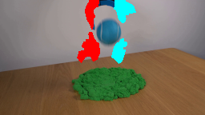
视觉工具实际返回图片 28

视觉工具实际返回图片 29
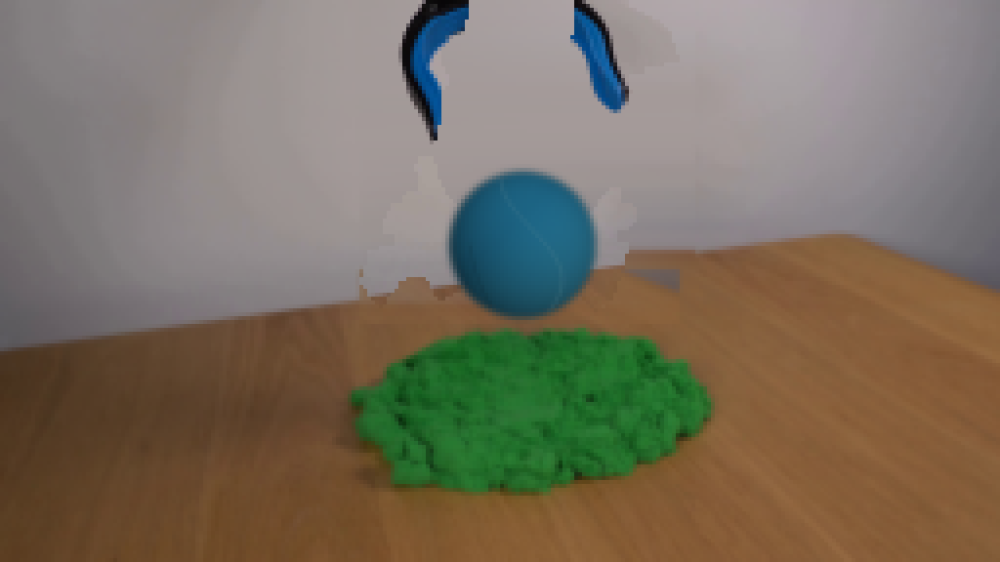
视觉工具实际返回图片 30
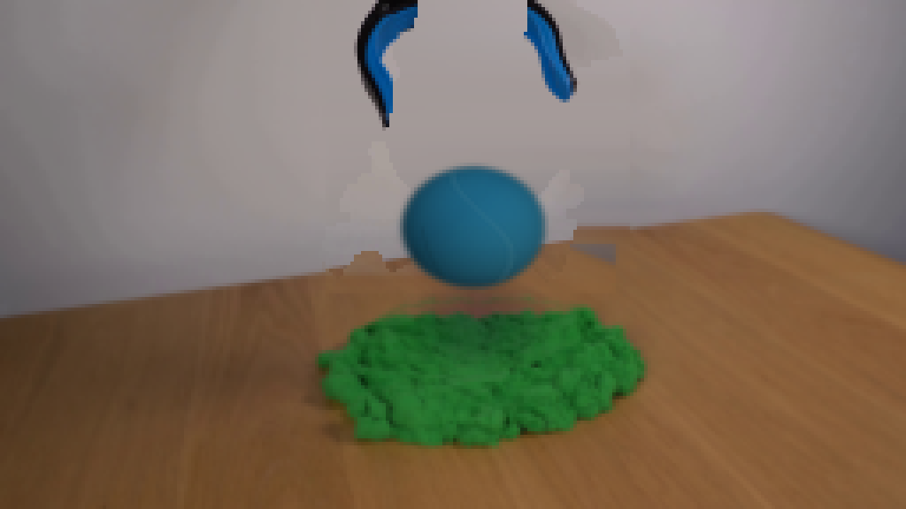
视觉工具实际返回图片 31
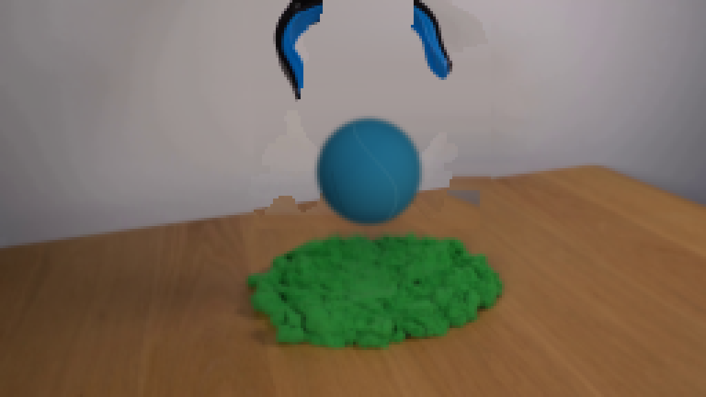
视觉工具实际返回图片 32
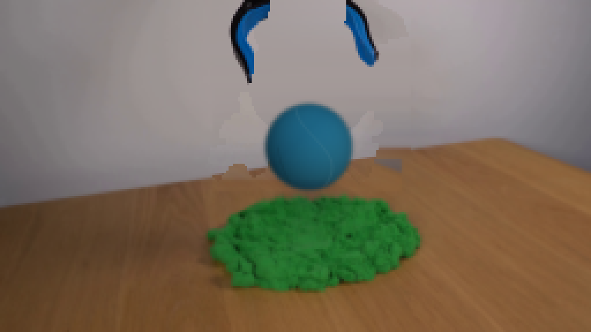
视觉工具实际返回图片 33
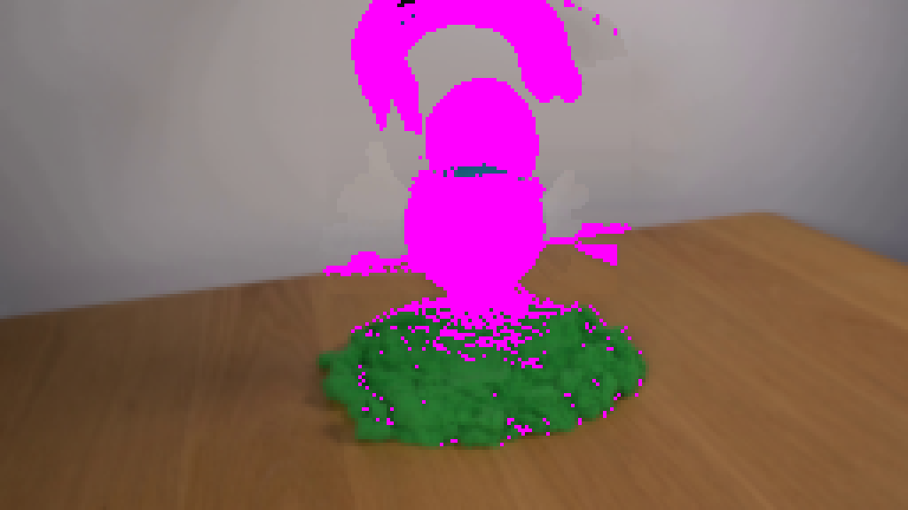
视觉工具实际返回图片 34
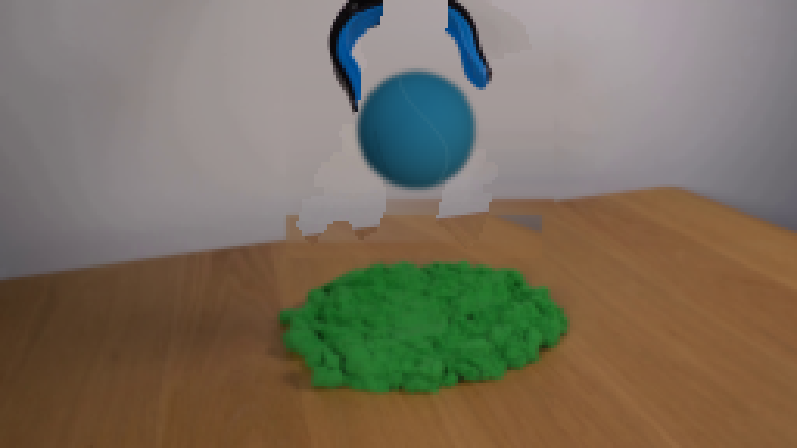
视觉工具实际返回图片 35
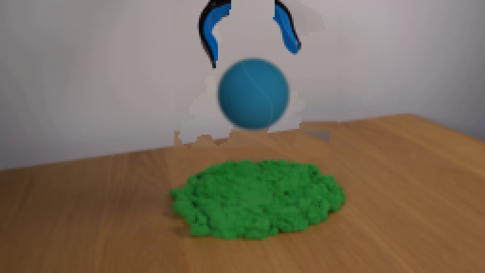
视觉工具实际返回图片 36
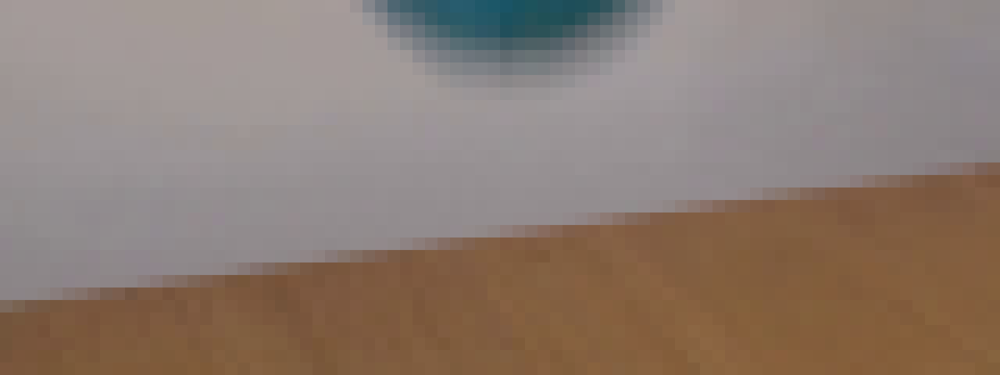
视觉工具实际返回图片 37
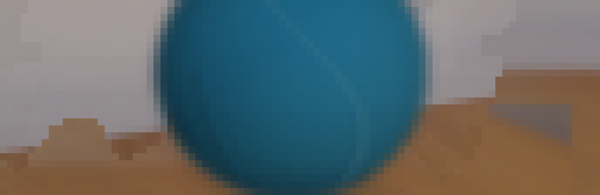
视觉工具实际返回图片 38
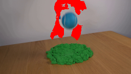
视觉工具实际返回图片 39
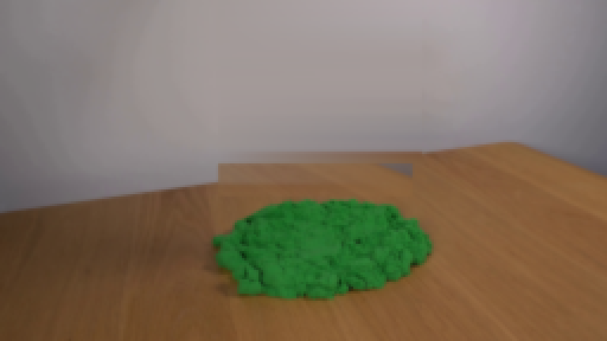
视觉工具实际返回图片 40
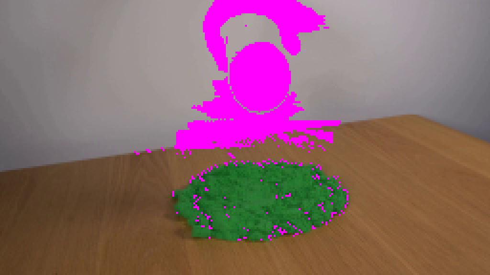
视觉工具实际返回图片 41
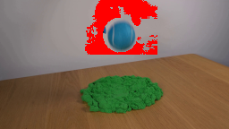
视觉工具实际返回图片 42
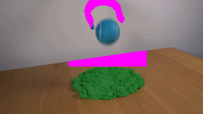
视觉工具实际返回图片 43
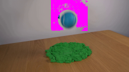
视觉工具实际返回图片 44
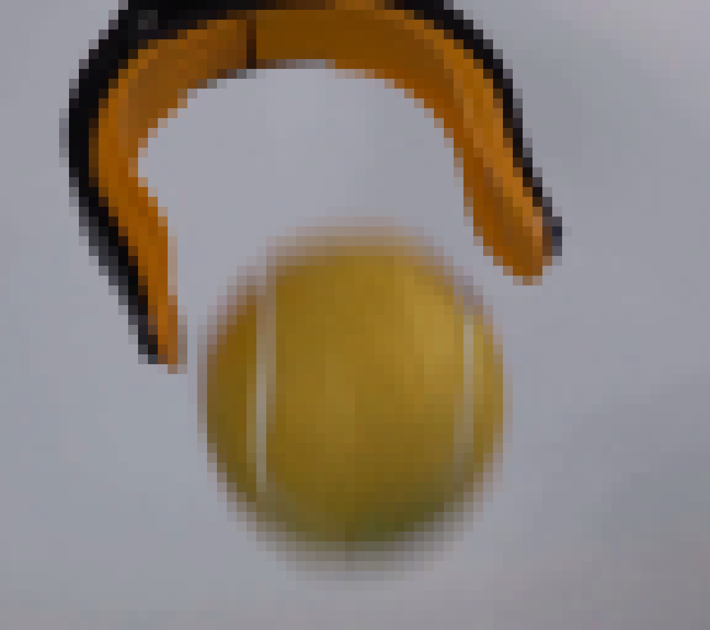
视觉工具实际返回图片 45
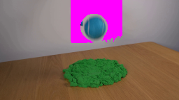
视觉工具实际返回图片 46
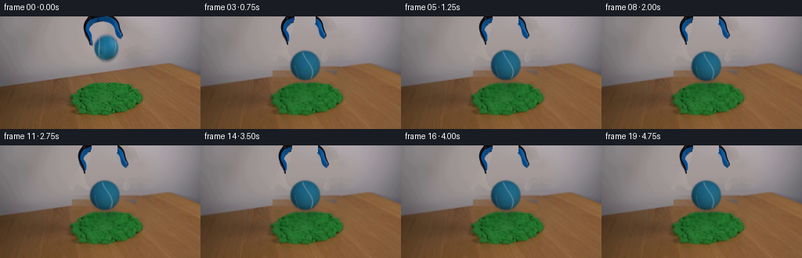
视觉工具实际返回图片 47
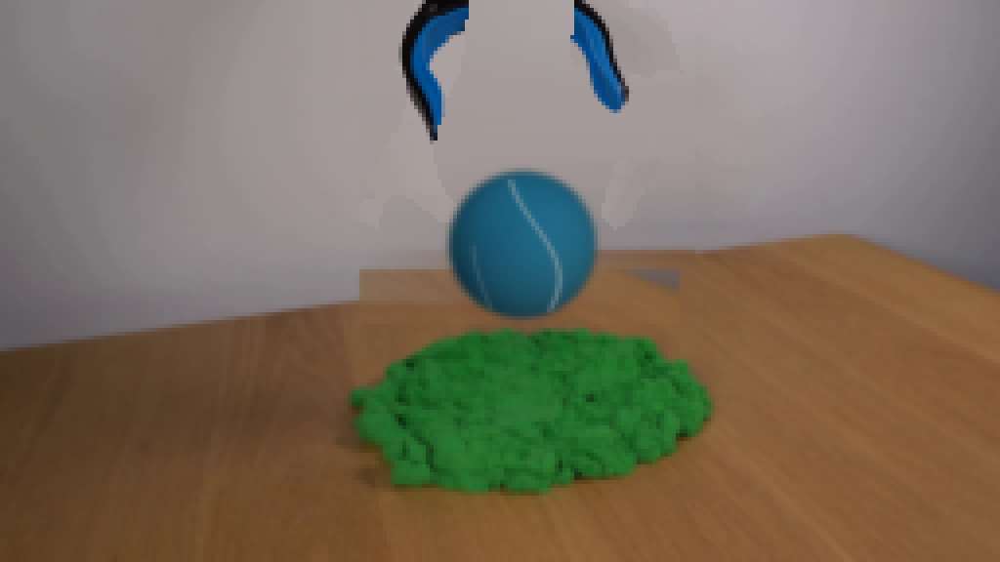
视觉工具实际返回图片 48
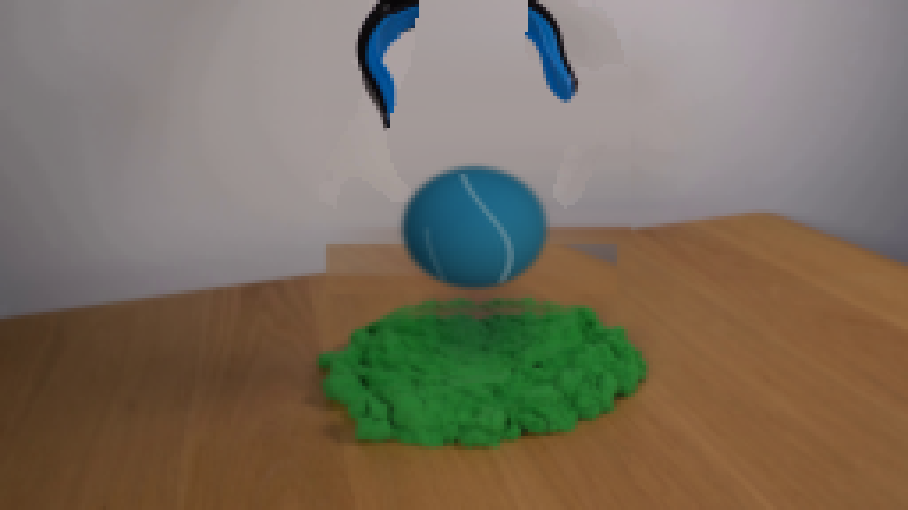
视觉工具实际返回图片 49
视觉工具实际返回图片 50
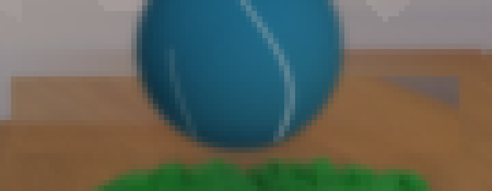
视觉工具实际返回图片 51
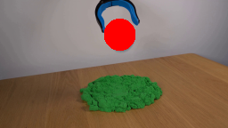
视觉工具实际返回图片 52
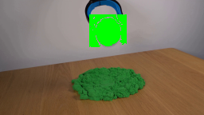
视觉工具实际返回图片 53
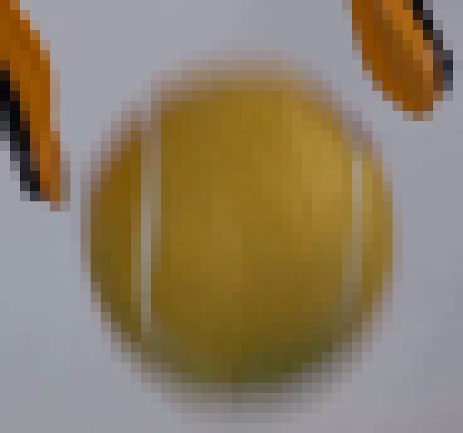
视觉工具实际返回图片 54
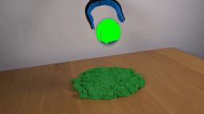
视觉工具实际返回图片 55
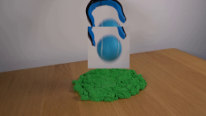
保存候选 2 份；完成命令 97 次；可验证图片返回 55 张。原始 API 响应与完整日志保留在本地。